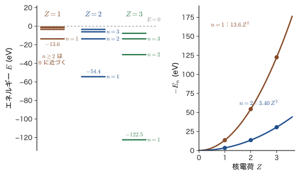
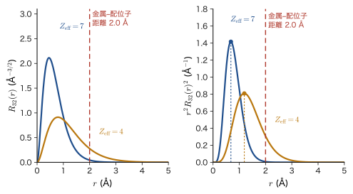
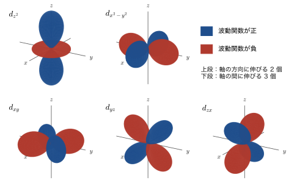
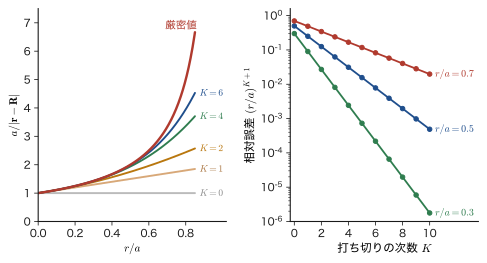

第43章結晶場の中の d 電子 — 水素様の 3d 軌道と点電荷モデル
ルビーは赤く，エメラルドは緑に見える．どちらも本来は無色透明の結晶（ルビーは酸化アルミニウム $\mathrm{Al_2O_3}$，エメラルドはベリル）に，クロムイオン $\mathrm{Cr^{3+}}$ がほんの少し混ざっているだけである．硫酸銅の水溶液が青く，硫酸ニッケルの水溶液が緑であるのも，磁鉄鉱 $\mathrm{Fe_3O_4}$ が黒いのも，鍵になっているのは遷移金属イオンの 3d 電子である（黒さには，d–d 遷移以外の電子の移動も関わる）．無機材料の論文や教科書には，$t_{2g}$，$e_g$，$\Delta_o$，$10Dq$，高スピン・低スピン，結晶場安定化エネルギー，田辺–菅野図といった記号や用語が次々に現れる．これらは暗記するものではなく，量子力学から順序立てて導けるものである．この第VIII部（第43〜48章）の目的は，その元になる理論をすべて自分の手で導けるようになることであり，この章はその出発点にあたる．
「配位子場理論」というと化学結合の理論のように聞こえるが，出発点は驚くほど素朴である．金属イオンの 3d 電子を，核電荷 $Ze_0$ の水素様原子の電子として扱い，周りにある酸化物イオンなどの配位子は負の点電荷とみなす．点電荷がつくる静電ポテンシャルは，高校物理と AD 03（第35章 35.1）で学んだ Coulomb の法則だけで書ける．古典物理の点電荷どうしなら「離れるほど反発が弱まる」というだけの話である．しかし量子力学では，電子は 1 点にいるのではなく，軌道 $\lvert\psi\rvert^2$ の形に広がっている．したがって，配位子の方を向いた軌道と，配位子の間を向いた軌道とでエネルギーが違ってくる．軌道の向きが意味をもつのである．そこで，まず 3d 軌道の形と大きさを正確に知る必要がある．
そこでこの章では，(1) 水素様原子の方程式を，核電荷 $Z$ を残したまま，変数分離と級数解法で 1 行も飛ばさずに解き，動径関数と準位 $E_n=-13.6\ \mathrm{eV}\times Z^2/n^2$ を導く．(2) その結果から 3d 軌道の動径関数 $R_{32}(r)$ と，実数の d 軌道 5 個の形と大きさを調べる．(3) 配位子の点電荷がつくるポテンシャルを Legendre の多項式で展開し，d 電子の準位を動かすのは $k=0,2,4$ の項だけであることを示す．次章（第44章）では，この準備を使って，5 重に縮退した d 準位が 2 重の $e_g$ と 3 重の $t_{2g}$ に分かれることを計算する．
この部の見取り図 — 前の部からのつながりと，各章の役割
前の部からのつながり．第VII部では，多電子系の波動関数（原子単位，Born–Oppenheimer 近似，Hartree 積，Slater 行列式：第33章），多電子原子の電子配置と項（第34章），Hartree–Fock 近似（第35章〜第37章），原子価結合法と混成軌道（第38章），分子軌道（第39章，第40章），結晶のバンド（第41章，第42章）を学んだ．テーマは一貫して「電子が，原子核と他の電子がつくる場の中でどう振る舞うか」であった．第VIII部は，その応用先の 1 つで，遷移金属イオンが酸化物や錯体の中にあるとき，周りの原子がつくる場の中の 3d 電子を扱う．必要な道具は，水素原子（第15章〜第17章），遮蔽（第18章），角運動量（第21〜25章），縮退のある摂動論（第28章）で，すでに揃っている．
各章の役割．3 つの模型を順に深めていく（図43.1）．
- 第43章（本章）：水素様原子の 3d 軌道と，配位子の点電荷がつくるポテンシャル．
- 第44章：八面体の点電荷の場で，5 重縮退の d 準位が 2 重の $e_g$ と 3 重の $t_{2g}$ に分かれる．$10Dq=\Delta_o$ の式．
- 第45章：この分裂が「計算の偶然」ではなく対称性から必然に出ることを，群論（指標表・既約表現）で示す．$t_{2g}$・$e_g$（1 電子の軌道は小文字）と $T_{2g}$・$E_g$（多電子の項は大文字）の名前の由来もここで定義する．
- 第46章：d 電子が $n$ 個あるときの入り方．高スピン・低スピン，結晶場安定化エネルギー，スピネルの陽イオンの席の選び方．
- 第47章：電子間反発を含めた多電子項．Racah（ラカー）のパラメータ $B,C$ と田辺–菅野図．
- 第48章：d–d 遷移と色（ルビーとエメラルド）．最後に分子軌道の見方（本来の意味での配位子場理論）へ進む．
$t_{2g}$ と $e_g$ の理論の元はどこにあるか．無機材料でよく見る $t_{2g}$，$e_g$（多電子の状態では $T_{2g}$，$E_g$）は，「5 個の d 軌道が，配位子がつくる場の対称性のために，性質の違う 2 つの組に分かれる」ことを表す名前である．その理論の元は，この章で作る「水素様 3d 軌道 $\times$ 配位子の点電荷ポテンシャル」という 2 つの部品に尽きる．次章でそれらを組み合わせると，分裂の式が出る．
$t_{2g}$・$e_g$ とは何の名前か — 先に全体像をつかんでおこう
5 個の d 軌道は 2 組に分かれる．金属イオンのまわりに 6 個の配位子が正八面体の頂点（$x,y,z$ 軸の上）に並ぶ場（八面体場）では，5 個の d 軌道は，配位子の方向に伸びる $d_{z^2}$，$d_{x^2-y^2}$ の 2 個と，配位子の間に伸びる $d_{xy}$，$d_{yz}$，$d_{zx}$ の 3 個に分かれる（図43.6，43.4.3 節．そう分かれることの証明は第44章）．前者の 2 個の組が $e_g$，後者の 3 個の組が $t_{2g}$ である．
名前の読み方．文字 $e$ は「2 重に縮退した組」，$t$ は「3 重に縮退した組」を表す（1 重の組は $a$ または $b$）．添字の $g$ はドイツ語の gerade（偶）の頭文字で，原点についての反転 $\bm{r}\to-\bm{r}$ で符号が変わらないことを示す（d 軌道はどれも反転で不変）．添字の $2$ は，同じ $t$ でも性質の異なる 3 重の組を区別する番号である．これらの名前を対称性（群の既約表現）から正式に定義するのは第45章で，ここでは「縮退の数と反転に対する性質を表すラベル」と思っておけばよい．
小文字と大文字．電子 1 個の軌道は小文字（$t_{2g}$，$e_g$），電子が複数あるときの全体の状態（項）は大文字（$T_{2g}$，$E_g$，$A_{2g}$ など）で書く．たとえば $d^1$ イオン（$\mathrm{Ti^{3+}}$）では，電子が $t_{2g}$ 軌道に入った状態が基底状態で，項は ${}^2T_{2g}$，$e_g$ 軌道に入った状態が励起状態 ${}^2E_g$ である．$d^n$ で電子が増えると，電子の入り方の組合せごとに $T_{2g}$，$E_g$，$A_{2g}$ などの項が現れる（第46，47章）．
エネルギーの差．$e_g$ と $t_{2g}$ のエネルギーの差を $\Delta_o\equiv E(e_g)-E(t_{2g})$ と書き，$10Dq$ ともいう（添字 $o$ は八面体 octahedral．$Dq$ という量は第44章で定義する）．この章の水素様 3d 軌道（式 \eqref{eq:43-R32}，図43.6）と点電荷ポテンシャル（$k=0,2,4$ の項，43.5 節）の 2 つの部品を次章で組み合わせると，$e_g$ が上，$t_{2g}$ が下に分かれ，$\Delta_o=10Dq$ の大きさが出る．色（第48章）も，高スピン・低スピン（第46章）も，この $\Delta_o$ で決まる．
- $t_{2g}$（$d_{xy},d_{yz},d_{zx}$ の 3 重の組）と $e_g$（$d_{z^2},d_{x^2-y^2}$ の 2 重の組）の名前の意味，$\Delta_o=10Dq$ の定義，これらが使われる材料の例，配位子場の 3 つの模型（点電荷・配位子場・分子軌道）の関係，波数 $\mathrm{cm^{-1}}$・eV・nm の換算
- 核電荷 $Ze_0$ の水素様原子の Schrödinger 方程式を球座標で変数分離し，動径方程式 ①，天頂角方程式 ②，方位角方程式 ③ を導くこと．分離定数 $l(l+1)$ と $m^2$ の意味
- $R=S/r$，$S=Xe^{-\kappa r}$，$x=2\kappa r$ と置き換えて動径方程式を Frobenius 級数で解き，級数が打ち切られる条件から主量子数 $n=\tau/2\kappa$ と $E_n=-\dfrac{m_{\mathrm e}Z^2e_0^4}{32\pi^2\varepsilon_0^2\hbar^2n^2}$ を導くこと．エネルギーが $Z^2$ に比例すること，Moseley（モーズリー）の法則
- 3d 軌道の動径関数 $R_{32}(r)=\dfrac{4}{81\sqrt{30}}\left(\dfrac{Z}{a_0}\right)^{3/2}\rho^2e^{-\rho/3}$ と $\expval{r^k}$，有効核電荷 $Z_{\mathrm{eff}}$ の意味と仮定値 $Z_{\mathrm{eff}}=7$，実数の d 軌道 5 個の形
- 点電荷のポテンシャルの Legendre 展開，d–d の行列要素に効くのが $k=0,2,4$ だけである理由（パリティと三角条件）
もとにしたノート：望月泰英『物理学ノート 量子力学3』 pp. 65–66．
43.1 遷移金属の色と磁性はなぜ $t_{2g}$・$e_g$ で語られるか — 出発点の実験事実と設定
43.1.1 出発点の実験事実 — 遷移金属化合物の色
金属イオンを水分子 6 個が取り囲んだ水和イオン $[\mathrm{M(H_2O)_6}]^{n+}$ の水溶液は，金属によってさまざまな色を示す．たとえば $\mathrm{Ti^{3+}}$ は紫，$\mathrm{Cu^{2+}}$ は青，$\mathrm{Ni^{2+}}$ は緑に見える．一方，3d 軌道が空の $\mathrm{Sc^{3+}}$，$\mathrm{Ti^{4+}}$（$3d^0$）や，満杯の $\mathrm{Zn^{2+}}$（$3d^{10}$）は無色で，酸化物の $\mathrm{TiO_2}$，$\mathrm{ZnO}$ は白い（d 軌道の間の遷移が起こらないうえ，バンドギャップが紫外にあって可視光を吸収しないため）．色は，3d 軌道が部分的にしか詰まっていないことと関係している．さらに，同じ $\mathrm{Cr^{3+}}$ でも，$\mathrm{Al_2O_3}$ の中では赤（ルビー），ベリル $\mathrm{Be_3Al_2Si_6O_{18}}$ の中では緑（エメラルド）になる．色は，金属イオンの種類だけでなく，そのまわりの原子の並び方でも決まる．
色の物理は，光の吸収である．光子 1 個のエネルギーは $h\nu=hc/\lambda$ で，可視光（波長 $400$〜$700\ \mathrm{nm}$）では $3.1$〜$1.8\ \mathrm{eV}$ である（AD 03 と第4章）．物質が特定の波長の光を吸収するのは，電子がエネルギーの低い準位から高い準位へ跳び移るとき，準位の間隔がその光子のエネルギーに等しいからである．したがって遷移金属化合物が色をもつということは，3d 電子の準位の間隔が約 $1$〜$3\ \mathrm{eV}$ だということを意味する．孤立した原子の中では 5 個の 3d 軌道のエネルギーは等しい（第16章）ので，この間隔は，結晶や錯体の中に入ったことで生まれたものである．ルビーの場合，$\mathrm{Cr^{3+}}$ の d 準位の間隔に対応する吸収帯が，約 $1.8\times10^4\ \mathrm{cm^{-1}}$（波長 555 nm，緑．黄緑に近い）と約 $2.5\times10^4\ \mathrm{cm^{-1}}$（400 nm 付近，紫）にあり，その間の赤と一部の青が透過して，深い赤に見える（第48章で詳しく調べる）．
例題43.1 $[\mathrm{Ti(H_2O)_6}]^{3+}$ の吸収と色
$[\mathrm{Ti(H_2O)_6}]^{3+}$ の水溶液は，波数 $\tilde{\nu}=20\,300\ \mathrm{cm^{-1}}$ の付近に吸収の極大をもつ．(1) この光の波長を nm で，(2) 光子エネルギーを eV で求め，(3) 水溶液が紫色に見える理由を述べよ．ただし $hc=1239.84\ \mathrm{eV\,nm}$，$1\ \mathrm{eV}=8065.54\ \mathrm{cm^{-1}}$ とする．
解答 (1) 波数は波長の逆数だから $\lambda=1/\tilde{\nu}=1/(20\,300\ \mathrm{cm^{-1}})=4.926\times10^{-5}\ \mathrm{cm}$．$1\ \mathrm{cm}=10^7\ \mathrm{nm}$ より $\lambda=492.6\ \mathrm{nm}$（青緑）．
(2) 光子エネルギーは $E=hc/\lambda=1239.84\ \mathrm{eV\,nm}/492.6\ \mathrm{nm}=2.517\ \mathrm{eV}$．波数の換算でも $20\,300/8065.54=2.517\ \mathrm{eV}$ と一致する．
(3) 青緑の光（約 $490\ \mathrm{nm}$ 付近）が吸収されるので，白色光から青緑が引かれて，補色にあたる赤紫の光が透過する．吸収帯は幅が広く黄色の側にも裾を引くので，赤と青の混ざった紫に見える．吸収の起源は，$\mathrm{Ti^{3+}}$（$3d^1$）の 1 個の d 電子が，エネルギーの低い d 軌道の組から高い組へ跳び移ることである（次章以降）．跳び移りのエネルギー $2.5\ \mathrm{eV}$ が，まさに $t_{2g}$ と $e_g$ の間隔 $\Delta_o$ にあたる．
43.1.2 $t_{2g}$・$e_g$ が現れる材料
$t_{2g}$ と $e_g$ という名前は，次のような材料の議論に頻繁に出てくる．ここでは名前を挙げるだけにして，各章で 1 つずつ理由を説明していく．
- ペロブスカイト酸化物：$\mathrm{SrTiO_3}$（$\mathrm{Ti^{4+}}$，$3d^0$）の伝導帯の底は，Ti の 3d の $t_{2g}$ 軌道でできている．$\mathrm{LaTiO_3}$ などの $\mathrm{RTiO_3}$（$3d^1$）や $\mathrm{LaMnO_3}$（$\mathrm{Mn^{3+}}$，$t_{2g}^3e_g^1$，Jahn–Teller（ヤーン–テラー）ひずみ）でも同様である．
- スピネル：$\mathrm{Fe_3O_4}$（磁鉄鉱），$\mathrm{LiMn_2O_4}$（リチウムイオン電池の正極）．四面体の席と八面体の席のどちらに陽イオンが入るかには，$t_{2g}$・$e_g$ への電子の入り方（結晶場安定化エネルギー）も効く（第46章）．
- 層状酸化物：$\mathrm{LiCoO_2}$．低スピンの $\mathrm{Co^{3+}}$（$t_{2g}^6$）が電池正極の骨格をつくる．
- 岩塩型酸化物：$\mathrm{NiO}$（$\mathrm{Ni^{2+}}$，$t_{2g}^6e_g^2$）．反強磁性の絶縁体．
- 銅酸化物超伝導体：$\mathrm{YBa_2Cu_3O_7}$．$\mathrm{CuO_2}$ 面の $d_{x^2-y^2}$ 軌道（$e_g$ に由来する軌道）が超伝導を担う．
この部の終わりまでに，これらの記号と，高スピン・低スピン，$10Dq$，結晶場安定化エネルギー，田辺–菅野図といった用語を，すべて自分で説明できるようになることを目標にしよう．
43.1.3 3 つの模型の階層と歴史
遷移金属イオンの周りの配位子の効果を扱う模型には，粗いものから精密なものまで 3 つの階層がある（表43.1．各階層と本部の各章との対応は図43.1 の色分けで示した）．この章と次章で扱う点電荷模型は，配位子を負の点電荷に置き換えて，金属イオンの d 電子だけを量子力学で扱う．最も単純で，化学結合を一切考えない静電気だけの模型であり，歴史的には結晶場理論（crystal field theory）とよばれる．次の階層の配位子場理論（ligand field theory）は，d 準位の分裂の大きさ $\Delta$ や電子間反発の強さ（Racah のパラメータ $B,C$）を，理論では計算せず，実験値から決めるパラメータとみなし，そのパラメータで多電子の項の並びを計算する（第46，47章）．最後の階層は，金属と配位子の電子をすべて含める分子軌道法・密度汎関数法で，共有結合を取り込む（第48章と，AD 05「マテリアル計算科学」，AD 07「密度汎関数理論」）．本部の名前が「配位子場理論」なのは，最終的にはこの 3 階層をつなぐ見方をめざすからであり，この章と次章の点電荷模型は，その最初の一段である．
| 模型 | 仮定 | 予言できること | 予言できないこと |
|---|---|---|---|
| 点電荷模型（結晶場理論） 第43，44章 | 配位子は負の点電荷．金属イオンの d 電子だけを量子力学で扱う | 5 重縮退の d 準位が分かれる様子（個数と順序），$\Delta\propto a^{-5}$，軌道の向きによる損得 | $\Delta$ の絶対値（共有結合を無視するので実験より小さい），配位子の種類による違い（分光化学系列） |
| 配位子場理論 第46，47章（第45章の対称性を道具に使う） | 分裂 $\Delta$ と Racah の $B,C$ を実験から決めるパラメータとする | $d^n$ 配置の高スピン・低スピンの判定，多電子項の並び，吸収スペクトルの帰属 | $\Delta,B,C$ の値そのもの |
| 分子軌道・密度汎関数法 第48章，AD 05，AD 07 | 金属と配位子の電子をすべて含める（共有結合） | $\Delta$ の大きさと配位子依存，電子雲の広がり，結合の性質 | 計算コストが大きい．強く相関した電子の扱いは難しい |
歴史を簡単に振り返っておこう．1929 年に Hans Bethe（ベーテ）が，結晶中のイオンのエネルギー項が結晶の対称性でどのように分裂するかを群論で調べた（結晶場理論の始まり）．1930 年代に J. H. Van Vleck（ヴァン・ヴレック）が，この考えを鉄族の塩の磁性に応用し，分子軌道の見方との関係も明らかにした．1954 年には田辺行人と菅野暁が，$d^n$ 配置のすべての項の分裂を 1 枚の図にまとめた（田辺–菅野図．第47章）．1950 年代後半には Griffith（グリフィス）と Orgel（オーゲル）らが，共有結合の効果をパラメータで取り込む配位子場理論として整理した．
43.1.4 共通の設定と，d 準位の縮退が壊れることの 4 つの帰結
本部では，中心の金属イオン（$3d^0$ から $3d^{10}$ までのイオン）が，配位子とよばれる陰イオンや分子（$\mathrm{O^{2-}}$，$\mathrm{F^-}$，$\mathrm{H_2O}$，$\mathrm{Cl^-}$ など）に取り囲まれた状況を考える．配位子の並び方（幾何）で最も多いのは，6 個が正八面体の頂点に並ぶ八面体配位で，そのほかに，4 個が正四面体の頂点に並ぶ四面体配位，4 個が 1 つの平面に正方形に並ぶ正方平面配位がある（図43.2）．酸化物の中の遷移金属イオンと酸化物イオンの距離（金属–酸素距離）は，おおむね $1.9$〜$2.2\ \text{Å}$ である（Shannon（シャノン）のイオン半径の表から）．
孤立した原子では，3d 軌道は磁気量子数 $m=-2,\dots,2$ の $2l+1=5$ 個があり，同じエネルギーをもつ（$l=2$ の 5 重縮退．スピンを含めると 10 重）．この縮退は，原子核のまわりの球対称性が生む「偶然ではない縮退」である．配位子が加わると球対称性が壊れ，縮退が解ける．この単純な事実が，次の 4 つの帰結を生む（それぞれ以降の章で回収する）．
- 色．分裂した d 準位の間の電子の跳び移りが可視光を吸収する（第48章）．
- 磁性．$d^4$〜$d^7$ の電子は，エネルギーの低い軌道に対に入るか，スピンをそろえて上の軌道にも入るかを選ぶ．前者が低スピン，後者が高スピンで，磁気モーメントの大きさが変わる（第46章）．
- サイト選択．スピネルなどで，陽イオンが四面体の席と八面体の席のどちらに入るかは，d 電子の安定化エネルギーの差にも左右される（第46章）．
- 格子のひずみ．縮退した軌道が不均等に占有されると，結晶が自発的にひずんで縮退を解く（Jahn–Teller 効果．第44章）．
43.1.5 本書で使う定数と換算
点電荷の Coulomb エネルギーの係数 $e_0^2/(4\pi\varepsilon_0)$ は，原子の大きさ（Å）とエネルギー（eV）で計算するときに便利な形に直しておく．これ以降，電気素量は $e_0$ と書く（電子の電荷は $-e_0$，$e_0=1.602\,176\,634\times10^{-19}\ \mathrm{C}$．AD 03 では $e$ と書いた同じ量）．また，分光学では，エネルギーを波数 $\tilde{\nu}=1/\lambda$ の単位 $\mathrm{cm^{-1}}$（カイザー）で表す習慣がある．波数 $\tilde{\nu}=1/\lambda$ は $E=hc\tilde{\nu}$ でエネルギーに比例するので準位間隔を足し引きするのに便利であり，分光器が実際に測る量（波長の逆数）でもある．また，値が $10^3$〜$10^4$ 程度の整数に収まって扱いやすい（可視光は $14\,286$〜$25\,000\ \mathrm{cm^{-1}}$）ので，この習慣が定着した．
| 量 | 値 |
|---|---|
| Coulomb エネルギーの係数 $e_0^2/(4\pi\varepsilon_0)$ | $14.3996\ \mathrm{eV\,\text{Å}}=1.43996\ \mathrm{eV\,nm}$（$=E_{\mathrm h}a_0$） |
| $hc$ | $1239.84\ \mathrm{eV\,nm}$ |
| Bohr 半径 $a_0$，Hartree エネルギー $E_{\mathrm h}$ | $0.529\,177\ \text{Å}$，$27.2114\ \mathrm{eV}$ |
| $1\ \mathrm{eV}$ | $8065.54\ \mathrm{cm^{-1}}=96.485\ \mathrm{kJ/mol}=11\,604.5\ \mathrm{K}$ |
| $1\ \mathrm{cm^{-1}}$ | $1.23984\times10^{-4}\ \mathrm{eV}=0.011963\ \mathrm{kJ/mol}$ |
| 可視光 $700\ \mathrm{nm}$〜$400\ \mathrm{nm}$ | $14\,286\ \mathrm{cm^{-1}}$〜$25\,000\ \mathrm{cm^{-1}}$（$1.77\ \mathrm{eV}$〜$3.10\ \mathrm{eV}$） |
例題43.2 波数・eV・nm の換算
(1) 分裂の大きさ $\Delta=1\ \mathrm{eV}$ は，何 $\mathrm{cm^{-1}}$，何 nm，何 $\mathrm{kJ/mol}$ か．この光は可視光か．(2) 波長 $400\ \mathrm{nm}$ と $700\ \mathrm{nm}$ を $\mathrm{cm^{-1}}$ で表せ．
解答 (1) 表43.2 より $1\ \mathrm{eV}=8065.54\ \mathrm{cm^{-1}}\approx8066\ \mathrm{cm^{-1}}$．波長は $\lambda=hc/E=1239.84\ \mathrm{eV\,nm}/1\ \mathrm{eV}=1239.84\ \mathrm{nm}\approx1240\ \mathrm{nm}$（近赤外で，可視光の外）．モルあたりのエネルギーは $96.485\ \mathrm{kJ/mol}$．したがって $\Delta=1\ \mathrm{eV}$（約 $8000\ \mathrm{cm^{-1}}$）の錯体は，可視光を吸収せず（吸収は近赤外），この帯だけでは色がつかない．可視光の吸収に必要な $\Delta$ は約 $1.8$ 〜 $3.1\ \mathrm{eV}$，波数では約 $14\,000$ 〜 $25\,000\ \mathrm{cm^{-1}}$ である．
(2) $400\ \mathrm{nm}=4.00\times10^{-5}\ \mathrm{cm}$ より $\tilde{\nu}=1/(4.00\times10^{-5}\ \mathrm{cm})=25\,000\ \mathrm{cm^{-1}}$．$700\ \mathrm{nm}=7.00\times10^{-5}\ \mathrm{cm}$ より $\tilde{\nu}=14\,286\ \mathrm{cm^{-1}}$．この範囲に，3d 遷移金属の水和イオンの $\Delta_o$（おおよそ $1\times10^4$〜$3\times10^4\ \mathrm{cm^{-1}}$）が収まっていることが，色づく理由である．
43.2 核電荷 $Ze_0$ の水素様原子の Schrödinger 方程式 — 変数分離と $R=S/r$
43.2.1 核電荷 $Ze_0$ の水素様原子
金属イオンの中の 1 個の d 電子を考える．電子は，中心の原子核（電荷 $+Ze_0$）が及ぼす Coulomb 引力を受けている．電子（電荷 $-e_0$）と原子核の間の位置エネルギーは，Coulomb の法則（AD 03 第35章 35.1）より
\begin{equation} V(r)=-\frac{1}{4\pi\varepsilon_0}\frac{Ze_0^2}{r} \label{eq:43-V} \end{equation}である（$r$ は原子核からの距離，$\varepsilon_0$ は真空の誘電率）．水素原子（第15章）は $Z=1$ の場合にあたり，$Z=2$ は $\mathrm{He^+}$，$Z=3$ は $\mathrm{Li^{2+}}$ である．中心力ポテンシャルの形は $Z$ 倍の引力になるだけなので，水素原子の解き方がそのまま使える．ただし，$Z$ を 1 に置かずに最後まで残しておく．そうすると，結果が $Z$ にどう依存するかが見えるからである．実際の金属イオンでは，内側の電子が核電荷を遮蔽する（第18章）ので，$Z$ を有効核電荷 $Z_{\mathrm{eff}}$ に置き換えて使う（43.4 節）．また，原子核は無限に重いとして，電子だけの運動を考える（換算質量の補正は第15章 15.1）．
法則43.1 核電荷 $Ze_0$ の水素様原子の Schrödinger 方程式と境界条件
ポテンシャル \eqref{eq:43-V} の中の電子（質量 $m_{\mathrm e}$）の定常状態の波動関数 $\psi(r,\theta,\varphi)$ とエネルギー $E$ は，時間を含まない Schrödinger 方程式
\begin{equation} -\frac{\hbar^2}{2m_{\mathrm e}}\nabla^2\psi-\frac{1}{4\pi\varepsilon_0}\cdot\frac{Ze_0^2}{r}\,\psi=E\,\psi \label{eq:43-H} \end{equation}を，（i）$\psi$ が空間の各点で 1 つの値をとる（$\psi(r,\theta,\varphi+2\pi)=\psi(r,\theta,\varphi)$），（ii）$z$ 軸上と原点で有限，（iii）$r\to\infty$ で 0 に近づき規格化できる（$\int\lvert\psi\rvert^2\dd V=1$，束縛状態），という条件のもとで解いて決める．
式 \eqref{eq:43-H} の左辺の第 1 項は運動エネルギー，第 2 項は Coulomb 引力による位置エネルギーである．第 2 項の符号は $V(r)=-\dfrac{Ze_0^2}{4\pi\varepsilon_0r}$ が負（引力）であることを表している．
43.2.2 球座標のラプラシアン
ポテンシャルは原子核からの距離 $r$ だけの関数（球対称）なので，球座標 $(r,\theta,\varphi)$（$\theta$ は $z$ 軸からの角，$\varphi$ は方位角）を使う．Laplace 演算子（ラプラシアン）は，球座標で（AD 02 第44章 44.4）
\begin{equation} \nabla^2=\frac{1}{r^2}\frac{\partial}{\partial r}\left(r^2\frac{\partial}{\partial r}\right)+\frac{1}{r^2\sin\theta}\frac{\partial}{\partial\theta}\left(\sin\theta\frac{\partial}{\partial\theta}\right)+\frac{1}{r^2\sin^2\theta}\frac{\partial^2}{\partial\varphi^2} \label{eq:43-lap} \end{equation}である．第 1 項は $r$ 方向（動径方向）の広がり方，第 2・第 3 項は角度方向の広がり方を表し，後ろの 2 項には共通の係数 $1/r^2$ がかかっている．この構造が変数分離を可能にする．第 2・第 3 項の和は，軌道角運動量の大きさの 2 乗の演算子 $\hat{\bm{L}}^2$（第IV部）を使って $-\hat{\bm{L}}^2/(\hbar^2r^2)$ と書ける．後で分離定数を $l(l+1)$ とおくのは，$l(l+1)\hbar^2$ が $\hat{\bm{L}}^2$ の固有値だからである．動径方程式は，この $\hat{\bm{L}}^2$ の固有値を通じてだけ角度部分とつながる．導出は繰り返さないが，第 1，第 2 項は積の微分を実行して
$$ \frac{1}{r^2}\frac{\partial}{\partial r}\left(r^2\frac{\partial\psi}{\partial r}\right)=\frac{\partial^2\psi}{\partial r^2}+\frac{2}{r}\frac{\partial\psi}{\partial r},\qquad \frac{1}{\sin\theta}\frac{\partial}{\partial\theta}\left(\sin\theta\frac{\partial\psi}{\partial\theta}\right)=\frac{\partial^2\psi}{\partial\theta^2}+\frac{\cos\theta}{\sin\theta}\frac{\partial\psi}{\partial\theta} $$と書き直しておく（後者は $\partial_\theta(\sin\theta\,\psi_\theta)=\cos\theta\,\psi_\theta+\sin\theta\,\psi_{\theta\theta}$ による）．
43.2.3 変数分離 — 動径・天頂角・方位角の 3 本の方程式
解が 3 つの 1 変数関数の積
$$ \psi(r,\theta,\varphi)=R(r)\,\Theta(\theta)\,\Phi(\varphi) $$で書けると仮定して式 \eqref{eq:43-H} に代入する（変数分離法．この章の $\Phi(\varphi)$ は方位角の関数で，多電子系の Slater 行列式の $\Phi$ とは別である）．結果を先に述べておく．
公式43.1 核電荷 $Ze_0$ の水素様原子の 3 本の常微分方程式
式 \eqref{eq:43-H} の解 $\psi=R(r)\Theta(\theta)\Phi(\varphi)$ の各因子は，分離定数 $l(l+1)$，$m^2$ を含む次の 3 本の常微分方程式を満たす．
\begin{align} &r^2\frac{\dd^2R}{\dd r^2}+2r\frac{\dd R}{\dd r}+\left\{\frac{2m_{\mathrm e}}{\hbar^2}\left(Er^2+\frac{Ze_0^2}{4\pi\varepsilon_0}\,r\right)-l(l+1)\right\}R=0 \tag{①}\label{eq:43-R}\\[1mm] &\sin^2\theta\,\frac{\dd^2\Theta}{\dd\theta^2}+\sin\theta\cos\theta\,\frac{\dd\Theta}{\dd\theta}+\bigl\{l(l+1)\sin^2\theta-m^2\bigr\}\Theta=0 \tag{②}\label{eq:43-Th}\\[1mm] &\frac{\dd^2\Phi}{\dd\varphi^2}+m^2\,\Phi=0 \tag{③}\label{eq:43-Ph} \end{align}導出：変数分離
(a) 式の準備．式 \eqref{eq:43-H} の両辺に $-2m_{\mathrm e}r^2/\hbar^2$ を掛ける．3 つの項はそれぞれ，$-\dfrac{\hbar^2}{2m_{\mathrm e}}\nabla^2\psi\to+r^2\nabla^2\psi$，$-\dfrac{Ze_0^2}{4\pi\varepsilon_0r}\psi\to+\dfrac{2m_{\mathrm e}}{\hbar^2}\dfrac{Ze_0^2}{4\pi\varepsilon_0}\,r\,\psi$（$r^2\times\dfrac1r=r$ に注意），$E\psi\to-\dfrac{2m_{\mathrm e}}{\hbar^2}Er^2\psi$ となる．最後の項を左辺へ移すと（符号が $-$ から $+$ に変わる），$r^2\nabla^2\psi+\dfrac{2m_{\mathrm e}}{\hbar^2}\left(Er^2+\dfrac{Ze_0^2}{4\pi\varepsilon_0}r\right)\psi=0$ となる．式 \eqref{eq:43-lap} と 43.2.2 節の書き直しを使うと，
$$ r^2\frac{\partial^2\psi}{\partial r^2}+2r\frac{\partial\psi}{\partial r}+\frac{\partial^2\psi}{\partial\theta^2}+\frac{\cos\theta}{\sin\theta}\frac{\partial\psi}{\partial\theta}+\frac{1}{\sin^2\theta}\frac{\partial^2\psi}{\partial\varphi^2}+\frac{2m_{\mathrm e}}{\hbar^2}\left(Er^2+\frac{Ze_0^2}{4\pi\varepsilon_0}r\right)\psi=0 $$である．
(b) $\psi=R\Theta\Phi$ を代入する．$R$ は $r$ だけ，$\Theta$ は $\theta$ だけ，$\Phi$ は $\varphi$ だけの関数だから，偏微分は積の 1 つの因子にだけかかる（たとえば $\partial^2\psi/\partial r^2=R''\Theta\Phi$，$\partial^2\psi/\partial\theta^2=R\Theta''\Phi$．$'$ は各関数の唯一の変数での微分）．$\psi=R\Theta\Phi$ で全体を割ると，
$$ \underbrace{r^2\frac{R''}{R}+2r\frac{R'}{R}+\frac{2m_{\mathrm e}}{\hbar^2}\left(Er^2+\frac{Ze_0^2}{4\pi\varepsilon_0}r\right)}_{r\ \text{だけの関数}} +\underbrace{\frac{\Theta''}{\Theta}+\frac{\cos\theta}{\sin\theta}\frac{\Theta'}{\Theta}+\frac{1}{\sin^2\theta}\frac{\Phi''}{\Phi}}_{\theta,\varphi\ \text{だけの関数}}=0 $$となる．$\Phi''/\Phi$ の項の符号は，(a) の式の $+\dfrac{1}{\sin^2\theta}\dfrac{\partial^2\psi}{\partial\varphi^2}$ の符号がそのまま残った $+$ である．
(c) 動径と角度を分ける．第 2 の括りを右辺へ移すと，
\begin{equation} r^2\frac{R''}{R}+2r\frac{R'}{R}+\frac{2m_{\mathrm e}}{\hbar^2}\left(Er^2+\frac{Ze_0^2}{4\pi\varepsilon_0}r\right) =-\frac{\Theta''}{\Theta}-\frac{\cos\theta}{\sin\theta}\cdot\frac{\Theta'}{\Theta}-\frac{1}{\sin^2\theta}\cdot\frac{\Phi''}{\Phi}=l(l+1) \label{eq:43-sep1} \end{equation}である．左辺は $r$ だけ，右辺は $\theta,\varphi$ だけの関数で，しかもすべての $(r,\theta,\varphi)$ で等しい．そこで $\theta,\varphi$ を固定して $r$ だけ動かすと，右辺は変わらないから左辺も変わらない．同様に $r$ を固定して $\theta,\varphi$ を動かすと右辺も変わらない．したがって両辺は定数である．この定数（分離定数）を，あとの都合で $l(l+1)$ とおいた．左辺 $=l(l+1)$ に $R$ を掛けて整理すると，方程式 ① が得られる．
(d) 角度部分をさらに分ける．式 \eqref{eq:43-sep1} の右辺 $=l(l+1)$ に $\sin^2\theta$ を掛け（$\sin^2\theta\cdot\dfrac{\cos\theta}{\sin\theta}=\sin\theta\cos\theta$），$\Phi$ の項を移項する：
\begin{equation} \sin^2\theta\,\frac{\Theta''}{\Theta}+\sin\theta\cos\theta\,\frac{\Theta'}{\Theta}+l(l+1)\sin^2\theta=-\frac{\Phi''}{\Phi}=m^2 \label{eq:43-sep2} \end{equation}左辺は $\theta$ だけ，中辺は $\varphi$ だけの関数で，すべての $\theta,\varphi$ で等しいから，やはり定数である．その定数を $m^2$ とおいた．左辺 $=m^2$ に $\Theta$ を掛けて整理すると方程式 ②，中辺 $=m^2$ に $-\Phi$ を掛けて移項すると方程式 ③ が得られる．
（導出終わり）
なぜ？：分離定数を $l(l+1)$，$m^2$ とおくのはなぜか
分離定数は，この段階では何か分からない定数である．$c$ とおいても議論はまったく同じに進む．$l(l+1)$ と書くのは，あとで（第15章 15.4）天頂角の方程式 ② が $z$ 軸上で有限な解をもつ条件が「分離定数 $=l(l+1)$，$l$ は $0$ 以上の整数」と書けることが分かるので，最初からそう書いておくと式が整数だけで書けて楽になるからである．物理的には $l(l+1)\hbar^2$ は，軌道角運動量の大きさの 2 乗 $\hat{\bm{L}}^2$ の固有値である（第IV部）．同様に，方程式 ③ は $\Phi''=-m^2\Phi$ で，解は $e^{\pm im\varphi}$ である．$\varphi$ と $\varphi+2\pi$ は空間の同じ点だから，$\Phi(\varphi+2\pi)=\Phi(\varphi)$ が要る．これは $m$ が整数のときだけ満たされ（第15章 15.3），$m\hbar$ は角運動量の $z$ 成分の値にあたる．なお定数を $-m^2$ でなく $+m^2$ とおくのは，$-m^2$ では $\Phi''=+k^2\Phi$ となり，解が指数関数的に増減して 1 周したときに元に戻れないからである．
方程式 ② と ③ は，ポテンシャルが $r$ だけの関数でありさえすれば同じ形で現れる．したがって，水素原子（$Z=1$）と，この節の方程式（一般の $Z$）とで違うのは，動径方程式 ① の中の $Ze_0^2$ だけである．角度部分の解は，$\Phi(\varphi)\propto e^{im\varphi}$ と，② の解である Legendre の陪関数（$l\ge\lvert m\rvert$ のとき $z$ 軸上で有限，AD 02 第40章 40.4）で，両者をまとめた球面調和関数 $Y_l^m(\theta,\varphi)$（第22章）である．解の詳細は水素原子（第15章 15.3，15.4）と同じなので，本章では 43.3 節の終わりで結果だけ使う．
注意：$\hbar$ は 2 乗で入る．次元を確かめよう
方程式 ① の $\{\ \}$ の中の $\dfrac{2m_{\mathrm e}}{\hbar^2}(Er^2+\cdots)$ は，$\hbar$ が2 乗で入っている．$-\dfrac{\hbar^2}{2m_{\mathrm e}}\nabla^2\psi$（運動エネルギー）に $-\dfrac{2m_{\mathrm e}}{\hbar^2}$ を掛けたのだから，当然である．$\hbar$ が 1 乗だと，$\{\ \}$ の第 1 項の次元が $\mathrm{kg\,m^2\,s^{-1}}$ になり，無次元の $l(l+1)$ と足すことができない（次の例題43.3）．次元の確認は，式を書き写すときの誤りを見つけるのに最も手軽で強力な方法である．
例題43.3 動径方程式 ① の次元と，原子単位での形
(1) 式 ① の $\{\ \}$ の中の各項が無次元であることを，SI 単位で確かめよ．$\hbar$ が 1 乗だとどうなるかも述べよ．(2) $r=a_0\xi$，$E=E_{\mathrm h}\mathcal{E}$（$a_0$ は Bohr 半径，$E_{\mathrm h}=\hbar^2/(m_{\mathrm e}a_0^2)=e_0^2/(4\pi\varepsilon_0a_0)$ は Hartree エネルギー）と書き換えて，$\xi,\mathcal{E},Z$ だけの式にせよ．(3) $Z=1$，$\mathcal{E}=-1/2$，$l=0$ のとき $R=e^{-\xi}$ が解であることを確かめよ．
解答 (1) 単位は $[\hbar]=\mathrm{J\,s}=\mathrm{kg\,m^2\,s^{-1}}$，$[E]=\mathrm{J}=\mathrm{kg\,m^2\,s^{-2}}$，$[m_{\mathrm e}]=\mathrm{kg}$．$Ze_0^2/(4\pi\varepsilon_0)$ は Coulomb エネルギーと長さの積だから $\mathrm{J\,m}$ で，$r$ を掛けると $\mathrm{J\,m^2}=[E r^2]$ になる．よって $\{\ \}$ の第 1 項は
$$ \frac{2m_{\mathrm e}}{\hbar^2}\,Er^2\ \to\ \frac{\mathrm{kg}\cdot\mathrm{kg\,m^2\,s^{-2}}\cdot\mathrm{m^2}}{\mathrm{kg^2\,m^4\,s^{-2}}}=1 $$で無次元である．第 2 項（Coulomb 項）は，$[2m_{\mathrm e}/\hbar^2]\cdot[Ze_0^2/(4\pi\varepsilon_0)]\cdot[r]=\dfrac{\mathrm{kg}\cdot\mathrm{J\,m}\cdot\mathrm{m}}{\mathrm{J^2\,s^2}}=\dfrac{\mathrm{kg\,m^2}}{\mathrm{J\,s^2}}=1$（$\mathrm{J}=\mathrm{kg\,m^2\,s^{-2}}$ による）で，やはり無次元である．したがって $l(l+1)$ と足せる．$\hbar$ が 1 乗だと，分母が $\mathrm{kg\,m^2\,s^{-1}}$ となって第 1 項の次元は $\mathrm{kg\,m^2\,s^{-1}}\ne1$ になる．これでは $l(l+1)$ と足せないから，$\hbar^2$ でなければならない．
(2) $\dfrac{2m_{\mathrm e}}{\hbar^2}Er^2=2\cdot\dfrac{m_{\mathrm e}a_0^2}{\hbar^2}E_{\mathrm h}\mathcal{E}\xi^2=2\mathcal{E}\xi^2$（$m_{\mathrm e}a_0^2/\hbar^2=1/E_{\mathrm h}$ による）．また $\dfrac{2m_{\mathrm e}}{\hbar^2}\dfrac{Ze_0^2}{4\pi\varepsilon_0}r=2Z\dfrac{m_{\mathrm e}a_0^2}{\hbar^2}\cdot\dfrac{e_0^2}{4\pi\varepsilon_0a_0}\xi=2Z\xi$．$r^2R''+2rR'$ は $r\to a_0\xi$ に対して形が変わらない（$r^2\dd^2/\dd r^2=\xi^2\dd^2/\dd\xi^2$，$r\,\dd/\dd r=\xi\,\dd/\dd\xi$）ので，
$$ \xi^2\frac{\dd^2R}{\dd\xi^2}+2\xi\frac{\dd R}{\dd\xi}+\bigl\{2(\mathcal{E}\xi^2+Z\xi)-l(l+1)\bigr\}R=0 $$となる（原子単位．第33章 33.1 で導入した）．この節の $\xi=r/a_0$ は 43.3.6 節だけで使う記号で，43.4 節以降の $\rho=Zr/a_0$ とは別である．
(3) $R=e^{-\xi}$ なら $R'=-e^{-\xi}$，$R''=e^{-\xi}$．$Z=1$，$\mathcal{E}=-\tfrac12$，$l=0$ を代入すると，$\xi^2e^{-\xi}-2\xi e^{-\xi}+\bigl\{2(-\tfrac12\xi^2+\xi)\bigr\}e^{-\xi}=(\xi^2-2\xi-\xi^2+2\xi)e^{-\xi}=0$ となって満たされる．これは水素原子の 1s 状態（$E=-\tfrac12E_{\mathrm h}=-13.6\ \mathrm{eV}$）にほかならない．
43.2.4 動径関数を $R=S/r$ と置く — 打ち消し合う 4 項
動径方程式 ① の最初の 2 項 $r^2R''+2rR'$ をすっきりさせるために，動径波動関数を
$$ R(r)=\frac{S(r)}{r} $$と置いて代入する．まず，積の微分（商の微分）で $R'$ と $R''$ を作る．
\begin{equation} \frac{\dd R}{\dd r}=\frac{1}{r}\frac{\dd S}{\dd r}-\frac{S}{r^2},\qquad \frac{\dd^2R}{\dd r^2}=\frac{1}{r}\frac{\dd^2S}{\dd r^2}-\frac{2}{r^2}\frac{\dd S}{\dd r}+\frac{2}{r^3}S \label{eq:43-Rd} \end{equation}$R''$ は，$R'$ の第 1 項 $S'/r$ の微分が $S''/r-S'/r^2$，第 2 項 $-S/r^2$ の微分が $-S'/r^2+2S/r^3$ なので，足すと $S''/r-2S'/r^2+2S/r^3$ になる．これらから $r^2R''$ と $2rR'$ を作り，縦に並べて足す．
$$ \begin{array}{rcccc} r^2R'' &=& r\,S'' & -\,2S' & +\,\dfrac{2}{r}S\\[2mm] +\ 2rR' &=& & +\,2S' & -\,\dfrac{2}{r}S\\[1mm] \hline r^2R''+2rR' &=& r\,S'' & +\,0 & +\,0 \end{array} $$すなわち，$-2S'$ と $+2S'$，$+\dfrac{2}{r}S$ と $-\dfrac{2}{r}S$ がそれぞれ打ち消し合って，$rS''$ だけが残る．結局
\begin{equation} r^2R''+2rR'=r\frac{\dd^2S}{\dd r^2} \label{eq:43-cancel} \end{equation}である．これを式 ① に代入し，$\{\ \}R=\{\ \}S/r$ とすれば，
\begin{equation} r\frac{\dd^2S}{\dd r^2}+\left\{\frac{2m_{\mathrm e}}{\hbar^2}\left(Er^2+\frac{Ze_0^2}{4\pi\varepsilon_0}\,r\right)-l(l+1)\right\}\frac{S}{r}=0 \label{eq:43-S1} \end{equation}を得る．括弧の中の Coulomb 項の符号は，式 ① と同じ $+$ である（引力ポテンシャル $-Ze_0^2/(4\pi\varepsilon_0r)$ を移項して $+$ になった）．次の節で，この式を $r$ で割って進める．
例題43.4 $R=S/r$ の置き換えを具体的な関数で確かめる
$S(r)=r\,e^{-r}$ として，$R=S/r$ を作り，式 \eqref{eq:43-cancel} が成り立つことを確かめよ．
解答 $R=S/r=e^{-r}$ で，$R'=-e^{-r}$，$R''=e^{-r}$ だから $r^2R''+2rR'=r^2e^{-r}-2re^{-r}=(r^2-2r)e^{-r}$．一方，$S'=e^{-r}-re^{-r}$，$S''=-e^{-r}-e^{-r}+re^{-r}=(r-2)e^{-r}$ だから，$rS''=(r^2-2r)e^{-r}$ となって一致する．また，式 \eqref{eq:43-Rd} で確かめると，$R'=S'/r-S/r^2=(1-r)e^{-r}/r-e^{-r}/r=-e^{-r}$ となり，たしかに $-e^{-r}$ に一致する．4 項の内訳を $r=1$ で見ると，$r^2R''$ の 3 項は $rS''=-e^{-1}$，$-2S'=0$，$\dfrac{2}{r}S=2e^{-1}$，$2rR'$ の 2 項は $2S'=0$，$-\dfrac{2}{r}S=-2e^{-1}$ で，$0$ と $\pm2e^{-1}$ が打ち消し合って $-e^{-1}$ だけが残る．
43.3 動径方程式の級数解 — 主量子数の導入とエネルギーの $Z^2$ 依存
43.3.1 束縛状態の定数 $\kappa$ と $\tau$
式 \eqref{eq:43-S1} を $r$ で割る．$\dfrac{1}{r}\Bigl(Er^2+\dfrac{Ze_0^2}{4\pi\varepsilon_0}r\Bigr)\dfrac{S}{r}=\Bigl(E+\dfrac{Ze_0^2}{4\pi\varepsilon_0r}\Bigr)S$ に注意すると，
$$ \frac{\dd^2S}{\dd r^2}+\left\{\frac{2m_{\mathrm e}}{\hbar^2}\left(E+\frac{Ze_0^2}{4\pi\varepsilon_0\,r}\right)-\frac{l(l+1)}{r^2}\right\}S=0 $$である．括弧の第 1 項には $r^2$ がかからないことに注意する．電子が原子核に束縛されている状態を求めたいので，全エネルギーは負，$E\lt0$ である（$E\gt0$ なら電子は無限遠まで逃げられて束縛されない）．そこで正の定数 $\kappa$ と $\tau$ を次のように定める．
\begin{equation} -\kappa^2=\frac{2m_{\mathrm e}E}{\hbar^2},\qquad \tau=\frac{m_{\mathrm e}Ze_0^2}{2\pi\varepsilon_0\hbar^2}\qquad(\kappa\gt0,\ \tau\gt0) \tag{A}\label{eq:43-A} \end{equation}（$\kappa$ は「カッパ」，$\tau$ は「タウ」と読む．）$\kappa$ はエネルギー $E$ を，$\tau$ は Coulomb 引力の強さを表す．$\dfrac{2m_{\mathrm e}}{\hbar^2}\cdot\dfrac{Ze_0^2}{4\pi\varepsilon_0}=\dfrac{m_{\mathrm e}Ze_0^2}{2\pi\varepsilon_0\hbar^2}=\tau$ だから，動径方程式は次の形になる．
\begin{equation} \frac{\dd^2S}{\dd r^2}+\left\{-\kappa^2+\frac{\tau}{r}-\frac{l(l+1)}{r^2}\right\}S=0 \label{eq:43-S2} \end{equation}$\kappa,\tau$ の次元は，どちらも 1/長さである（$\kappa^2$ が $1/r^2$ と足し算されるので）．Bohr 半径 $a_0=\dfrac{4\pi\varepsilon_0\hbar^2}{m_{\mathrm e}e_0^2}$ を使うと $\tau=\dfrac{2Z}{a_0}$ である（$\tau=2Z\cdot\dfrac{m_{\mathrm e}e_0^2}{4\pi\varepsilon_0\hbar^2}=\dfrac{2Z}{a_0}$）．つまり $\tau$ は原子核の電荷だけで決まり，$\kappa$ が（$E$ を通じて）まだ決まっていない未知数である．
イメージ：式 \eqref{eq:43-S2} は半直線の上の 1 次元の Schrödinger 方程式
式 \eqref{eq:43-S2} に $-\hbar^2/(2m_{\mathrm e})$ を掛けると，$-\dfrac{\hbar^2}{2m_{\mathrm e}}\dfrac{\dd^2S}{\dd r^2}+V_{\mathrm{eff}}(r)S=ES$ ，$V_{\mathrm{eff}}(r)=-\dfrac{Ze_0^2}{4\pi\varepsilon_0r}+\dfrac{\hbar^2\,l(l+1)}{2m_{\mathrm e}r^2}$ となる．$r\gt0$ だけの 1 次元の問題（第10章と同じ形）で，右辺の第 1 項が Coulomb 引力，第 2 項が遠心力ポテンシャルである．古典力学で，角運動量 $L$ をもつ中心力運動の動径方向の運動が $L^2/(2m_{\mathrm e}r^2)$ を含む有効ポテンシャルで書けること（AD 03 第8章 8.4）の量子版で，$L^2\to l(l+1)\hbar^2$ に置き換えたものになっている．$r\to0$ で遠心力の項が $+\infty$ に発散し，電子を原点から遠ざける．原点で $R$ が有限であることから $S(0)=rR|_{r=0}=0$ であり，規格化は $\displaystyle\int_0^\infty R^2r^2\dd r=\int_0^\infty S^2\dd r$ になる（第15章 15.5）．
まず，2 つの極限での解の形を見ておく．$r\to\infty$ では $\tau/r$ と $l(l+1)/r^2$ が $\kappa^2$ に比べて 0 に近づくので，式 \eqref{eq:43-S2} は $S''\simeq\kappa^2S$，解は $S\simeq Ae^{-\kappa r}+Be^{+\kappa r}$ となる．規格化のためには $e^{+\kappa r}$ が許されない（$B=0$）から，遠方で $S\simeq Ae^{-\kappa r}$ と減衰する．$r\to0$ では $l(l+1)/r^2$ が最も強い項で，$S''\simeq l(l+1)S/r^2$．$S\sim r^s$ とおくと $s(s-1)=l(l+1)$，すなわち $s=l+1$ または $s=-l$ で，規格化と $S(0)=0$ から $s=l+1$（$R\sim r^l$）である．次に見る置き換えは，この 2 つの極限の形を先に取り出すためのものである．
43.3.2 $S=X\,e^{-\kappa r}$ と置く
遠方の減衰 $e^{-\kappa r}$ を先に取り出して，
$$ S(r)=X(r)\,e^{-\kappa r} $$と置く．$X=Se^{\kappa r}$ で新しい関数 $X$ を定義しただけなので，何の一般性も失われない．積の微分を実行する．
$$ \frac{\dd S}{\dd r}=\Bigl(\frac{\dd X}{\dd r}-\kappa X\Bigr)e^{-\kappa r},\qquad \frac{\dd^2S}{\dd r^2}=\Bigl(\frac{\dd^2X}{\dd r^2}-\kappa\frac{\dd X}{\dd r}\Bigr)e^{-\kappa r}-\kappa\Bigl(\frac{\dd X}{\dd r}-\kappa X\Bigr)e^{-\kappa r}=\Bigl(\frac{\dd^2X}{\dd r^2}-2\kappa\frac{\dd X}{\dd r}+\kappa^2X\Bigr)e^{-\kappa r} $$これを式 \eqref{eq:43-S2} に代入すると，
$$ \Bigl(X''-2\kappa X'+\kappa^2X\Bigr)e^{-\kappa r}+\Bigl\{-\kappa^2X+\frac{\tau}{r}X-\frac{l(l+1)}{r^2}X\Bigr\}e^{-\kappa r}=0 $$となる．$+\kappa^2X$ と $-\kappa^2X$ が打ち消し合うので，$e^{-\kappa r}\ne0$ で割って，
\begin{equation} \frac{\dd^2X}{\dd r^2}-2\kappa\frac{\dd X}{\dd r}+\left\{\frac{\tau}{r}-\frac{l(l+1)}{r^2}\right\}X=0 \label{eq:43-X} \end{equation}を得る．
43.3.3 $x=2\kappa r$ と置く — 無次元の変数へ
式 \eqref{eq:43-X} には次元のある定数 $\kappa,\tau$ が 2 つ残って見通しが悪い．そこで，長さ $1/(2\kappa)$ を単位とする無次元の変数
$$ x=2\kappa r $$を導入する．$r=x/(2\kappa)$ で，連鎖律より $\dfrac{\dd}{\dd r}=\dfrac{\dd x}{\dd r}\dfrac{\dd}{\dd x}=2\kappa\dfrac{\dd}{\dd x}$，したがって $\dfrac{\dd X}{\dd r}=2\kappa\dfrac{\dd X}{\dd x}$，$\dfrac{\dd^2X}{\dd r^2}=4\kappa^2\dfrac{\dd^2X}{\dd x^2}$，また $\dfrac{1}{r}=\dfrac{2\kappa}{x}$，$\dfrac{1}{r^2}=\dfrac{4\kappa^2}{x^2}$ である．式 \eqref{eq:43-X} に代入すると
$$ 4\kappa^2\frac{\dd^2X}{\dd x^2}-2\kappa\cdot2\kappa\frac{\dd X}{\dd x}+\left\{\tau\cdot\frac{2\kappa}{x}-l(l+1)\frac{4\kappa^2}{x^2}\right\}X=0 $$で，両辺を $4\kappa^2$ で割ると，
\begin{equation} \frac{\dd^2X}{\dd x^2}-\frac{\dd X}{\dd x}+\left\{\frac{\tau}{2\kappa}\cdot\frac{1}{x}-\frac{l(l+1)}{x^2}\right\}X=0 \label{eq:43-Xx} \end{equation}となる．$\tau$ と $\kappa$ が $\tau/2\kappa$ という 1 つの組み合わせだけで入っていることに注目して，これに名前を付ける．
\begin{equation} n\equiv\frac{\tau}{2\kappa} \tag{B}\label{eq:43-B} \end{equation}この段階では，$n$ は $\tau/2\kappa$ という正の実数の名前にすぎない．整数になることは，43.3.4 節で示す．$n$ を使うと式 \eqref{eq:43-Xx} は
\begin{equation} \frac{\dd^2X}{\dd x^2}-\frac{\dd X}{\dd x}+\left\{\frac{n}{x}-\frac{l(l+1)}{x^2}\right\}X=0 \label{eq:43-Xn} \end{equation}と，パラメータ $n,l$ だけを含む形になる．ここまでの変形の流れを図43.3 にまとめる．
43.3.4 Frobenius の級数解 — 打ち切り条件と主量子数
式 \eqref{eq:43-Xn} は $x=0$ に特異点をもつ（$1/x$，$1/x^2$ の項）が，確定特異点なので，Frobenius の級数解 $X=\sum_{j=0}^{\infty}c_jx^{j+\lambda}$（$c_0\ne0$）が存在する（AD 02 第39章 39.3，39.4）．これを式 \eqref{eq:43-Xn} に代入する．
導出：Frobenius 級数の係数と打ち切り
項別に微分して代入し，$x^{j+\lambda-2}$ をもつ項（$X''$ と $-l(l+1)X/x^2$）と $x^{j+\lambda-1}$ をもつ項（$-X'$ と $nX/x$）に分けると，
$$ \sum_{j=0}^{\infty}\bigl[(j+\lambda)(j+\lambda-1)-l(l+1)\bigr]c_j\,x^{j+\lambda-2}+\sum_{j=0}^{\infty}\bigl[n-(j+\lambda)\bigr]c_j\,x^{j+\lambda-1}=0 $$となる．第 1 の和の $j=0$ の項（最低次 $x^{\lambda-2}$）を取り出し，$j\ge1$ の項の添字を $j\to j+1$ とずらして $x^{j+\lambda-1}$ にそろえると，各べきの係数が 0 である条件は（べき級数の一意性）
\begin{align} \bigl[\lambda(\lambda-1)-l(l+1)\bigr]c_0&=0 \label{eq:43-ind}\\ \bigl[(j+1+\lambda)(j+\lambda)-l(l+1)\bigr]c_{j+1}+\bigl[n-(j+\lambda)\bigr]c_j&=0\qquad(j=0,1,2,\dots) \label{eq:43-rec0} \end{align}である．式 \eqref{eq:43-ind}（決定方程式）は $(\lambda-l-1)(\lambda+l)=0$ と因数分解できて，$\lambda=l+1$ または $\lambda=-l$．$\lambda=-l$ は $R=S/r\sim r^{-l-1}$ と原点で発散する解なので捨て（43.3.1 節の $s=l+1$），$\lambda=l+1$ をとる．このとき $(j+l+2)(j+l+1)-l(l+1)=(j+1)(j+2l+2)$，$n-(j+l+1)$ であるから，式 \eqref{eq:43-rec0} は漸化式
\begin{equation} c_{j+1}=\frac{j+l+1-n}{(j+1)(j+2l+2)}\,c_j\qquad(j=0,1,2,\dots) \label{eq:43-rec} \end{equation}になる．$c_0$ は全体の定数倍で，あとで規格化で決める．
打ち切り．$n$ が $l+1$ 以上の整数でないとき，式 \eqref{eq:43-rec} の分子はどの $j$ でも 0 にならないので，級数は止まらない．$j\to\infty$ では $c_{j+1}/c_j\to1/j$ で，これは $e^{x}=\sum x^j/j!$ の係数の比と同じ振る舞いである．したがって $X\sim e^{x}$，$S=Xe^{-\kappa r}\sim e^{+\kappa r}$（$x/2=\kappa r$）となり，$r\to\infty$ で発散して規格化できない（詳しい不等式による証明は第15章 15.5.6にある）．これは，43.3.1 節で捨てた $e^{+\kappa r}$ の解が残ってしまったものである．規格化できる解は，級数が有限項で止まって多項式になるときだけである．止まるのは，ある $j_{\max}$ で $c_{j_{\max}+1}=0$ となるとき，すなわち分子が 0 になる $j_{\max}+l+1-n=0$ のときで，$j_{\max}\ge0$ と $l\ge0$ が整数だから，
\begin{equation} n=j_{\max}+l+1=l+1,\ l+2,\ l+3,\ \dots\qquad(\text{整数，}\ l\le n-1) \label{eq:43-nint} \end{equation}である．こうして，$X$ は $x^{l+1}$ から $x^{n}$ までの多項式になる．$x^{l+1}$ を除いた多項式の次数 $n-l-1$ は，動径波動関数が 0 になる点（動径節）の個数に等しい．
（導出終わり）
係数を閉じた形に書き下そう．漸化式 \eqref{eq:43-rec} を $c_0$ から順に掛け合わせると（$j$ が $j_{\max}=n-l-1$ まで続く）$c_j=c_0(-1)^j\dfrac{(n-l-1)!\,(2l+1)!}{(n-l-1-j)!\,(2l+1+j)!\,j!}$ となる．ここで $k=j+2l+1$ と添字を付け替え，$c_0$ の因子を吸収して全体を $\{(n+l)!\}^2$ 倍すると，次の定理になる．
定理43.1 動径方程式の級数解（$X$ と $R$）
式 \eqref{eq:43-Xn} の原点で正則で，無限遠で規格化できる解は，$n=l+1,\,l+2,\dots$ のとき
\begin{equation} X(x)=N_{nl}\sum_{k=2l+1}^{n+l}\frac{(-1)^k\,\bigl\{(n+l)!\bigr\}^2}{(k-2l-1)!\;k!\;(n+l-k)!}\;x^{\,k-l} \label{eq:43-Xser} \end{equation}で与えられる（$N_{nl}$ は全体の定数）．動径関数は $S(r)=X(2\kappa r)\,e^{-\kappa r}$，$R(r)=\dfrac{S(r)}{r}=\dfrac{X(2\kappa r)\,e^{-\kappa r}}{r}$ である．
記号：定数は $N_{nl}$ と書く（Bohr 半径の $a_0$ と区別）
式 \eqref{eq:43-Xser} の全体にかかる定数は，微分方程式（線形同次）の解が定数倍の自由度をもつことを表す任意定数で，最後に規格化条件 $\int_0^\infty R^2r^2\dd r=1$ で決まる．一般に $a_0$ のような記号で書かれることもあるが，本書では Bohr 半径 $a_0=4\pi\varepsilon_0\hbar^2/(m_{\mathrm e}e_0^2)$ と紛れるので，規格化定数として $N_{nl}$ と書く．なお，級数の和 $\displaystyle\sum_{k}\dfrac{(-1)^k\{(n+l)!\}^2}{(k-2l-1)!\,k!\,(n+l-k)!}\,x^{k-2l-1}$ は Laguerre の陪多項式（旧規約）$L_{n+l}^{2l+1}(x)$ であり，$X=x^{l+1}L_{n+l}^{2l+1}(x)$ と書ける（AD 02 第41章 41.5，第48章 48.3）．
導出：式 \eqref{eq:43-Xser} が漸化式 \eqref{eq:43-rec} を満たすこと
式 \eqref{eq:43-Xser} の $x^{k-l}$ の係数を $a_k=\dfrac{(-1)^k\{(n+l)!\}^2}{(k-2l-1)!\,k!\,(n+l-k)!}$ とおく．隣り合う係数の比は
$$ \frac{a_{k+1}}{a_k}=-\frac{(k-2l-1)!\,k!\,(n+l-k)!}{(k-2l)!\,(k+1)!\,(n+l-k-1)!}=-\frac{n+l-k}{(k-2l)(k+1)} $$である．$x^{k-l}=x^{l+1+j}$ とみて $j=k-2l-1$（$k=j+2l+1$）とおくと，$k-2l=j+1$，$k+1=j+2l+2$，$n+l-k=n-l-1-j$ だから，$\dfrac{a_{k+1}}{a_k}=\dfrac{j+l+1-n}{(j+1)(j+2l+2)}$．これは漸化式 \eqref{eq:43-rec} の $c_{j+1}/c_j$ に一致する．また，和は $k=n+l$（$j=n-l-1$）で終わり，最低次は $k=2l+1$（$j=0$）の $x^{l+1}$ である．最低次の係数 $a_{2l+1}$ の符号は $(-1)^{2l+1}=-1$ である．
（導出終わり）
例題43.5 3p 軌道（$n=3,\ l=1$）を級数から作る
式 \eqref{eq:43-Xser} を $n=3$，$l=1$ で書き下し，動径節の位置を求めよ．また，原点付近での符号を調べ，$R$ が原点付近で正になる標準の符号にそろえた規格化された関数 $R_{31}(r)$ を求めよ．
解答 和は $k=2l+1=3$ から $n+l=4$ までの 2 項である．$(n+l)!=4!=24$，$\{(n+l)!\}^2=576$．$k=3$：$\dfrac{(-1)^3\cdot576}{0!\,3!\,1!}=-96$（$x^{k-l}=x^2$）．$k=4$：$\dfrac{(+1)\cdot576}{1!\,4!\,0!}=+24$（$x^3$）．よって
$$ X(x)=N_{31}\bigl(-96x^2+24x^3\bigr)=24N_{31}\,x^2\,(x-4) $$である（漸化式 \eqref{eq:43-rec} でも $c_1/c_0=\dfrac{0+1+1-3}{1\cdot4}=-\dfrac14$ で，$X\propto x^2(1-x/4)$ と一致する）．節は $x=4$．$\kappa=\dfrac{\tau}{2n}=\dfrac{Z}{3a_0}$（43.3.5 節）だから $x=2\kappa r=\dfrac{2Zr}{3a_0}$ で，節は $r=\dfrac{6a_0}{Z}$ の 1 か所（$n-l-1=1$）である．原点付近（$0\lt x\lt4$）では $x-4\lt0$ なので，$N_{31}\gt0$ なら $R\lt0$ である．$R\sim r^l$ の係数が正になる標準の符号にするには，全体に $-1$ を掛ける．規格化定数を 43.3.5 節の一般公式（式 \eqref{eq:43-Rstd} の直前の $N_{nl}$）で決めると，
$$ R_{31}(r)=\frac{8}{27\sqrt6}\left(\frac{Z}{a_0}\right)^{3/2}\left(1-\frac{Zr}{6a_0}\right)\frac{Zr}{a_0}\,e^{-Zr/3a_0} $$となる（$Z=1$ で $R_{31}=\dfrac{4\sqrt6}{81}\,\dfrac{r}{a_0}\Bigl(1-\dfrac{r}{6a_0}\Bigr)e^{-r/3a_0}\,a_0^{-3/2}$，$8/(27\sqrt6)=4\sqrt6/81$）．原点付近では $r$ に比例して正（$R\sim r^l=r$），$r=6a_0/Z$ で 0 を横切って負になり，遠方で $e^{-Zr/3a_0}$ で減衰する．動径節が $n-l-1=1$ 個あることが，節をもたない 2p や 3d との違いである．
43.3.5 $R(r)$ の明示式と準位 $E_n$
式 \eqref{eq:43-B} より $\kappa=\tau/2n$．これを 2 乗し，$\tau^2=\dfrac{m_{\mathrm e}^2Z^2e_0^4}{4\pi^2\varepsilon_0^2\hbar^4}$ を使うと
\begin{equation} \kappa^2=\frac{\tau^2}{4n^2}=\frac14\cdot\frac{m_{\mathrm e}^2Z^2e_0^4}{4\pi^2\varepsilon_0^2\hbar^4}\cdot\frac{1}{n^2} \label{eq:43-kappa2} \end{equation}である．一方，式 \eqref{eq:43-A} より $-\kappa^2=2m_{\mathrm e}E/\hbar^2$ だった．この 2 式から $\kappa^2$ を消去して $E$ を求める．
導出：エネルギー準位
$E=-\dfrac{\hbar^2}{2m_{\mathrm e}}\kappa^2$ に式 \eqref{eq:43-kappa2} を代入すると，
$$ E=-\frac{\hbar^2}{2m_{\mathrm e}}\cdot\frac14\cdot\frac{m_{\mathrm e}^2Z^2e_0^4}{4\pi^2\varepsilon_0^2\hbar^4}\cdot\frac{1}{n^2}=-\frac{m_{\mathrm e}Z^2e_0^4}{32\pi^2\varepsilon_0^2\hbar^2}\cdot\frac{1}{n^2} $$である（分母は $2\cdot4\cdot4\pi^2=32\pi^2$，$m_{\mathrm e}^2/m_{\mathrm e}=m_{\mathrm e}$，$\hbar^2/\hbar^4=1/\hbar^2$）．次元は，$e_0^2/(4\pi\varepsilon_0)$ が $\mathrm{J\,m}$，$\hbar^2/m_{\mathrm e}$ が $\mathrm{J\,m^2}$ だから，$E\sim(\mathrm{J\,m})^2/(\mathrm{J\,m^2})=\mathrm{J}$ で正しい．
（導出終わり）
定理43.2 水素様原子のエネルギー準位
\begin{equation} E_n=-\frac{m_{\mathrm e}Z^2e_0^4}{32\pi^2\varepsilon_0^2\hbar^2}\cdot\frac{1}{n^2}=-\frac{m_{\mathrm e}Z^2e_0^4}{8\varepsilon_0^2h^2}\cdot\frac{1}{n^2}=-13.606\ \mathrm{eV}\times\frac{Z^2}{n^2}\qquad(n=1,2,3,\dots) \label{eq:43-E} \end{equation}ここで 2 番目の等号では $32\pi^2\hbar^2=8h^2$（$\hbar=h/2\pi$）を，3 番目では $m_{\mathrm e}e_0^4/(32\pi^2\varepsilon_0^2\hbar^2)=13.606\ \mathrm{eV}$ を使った．エネルギーは $l$ と $m$ によらず $n$ だけで決まる．
$\kappa$ も決まる：$\kappa=\dfrac{\tau}{2n}=\dfrac{Z}{na_0}$．したがって $2\kappa r=\dfrac{2Zr}{na_0}$ で，$R$ の指数関数は $e^{-Zr/(na_0)}$ である．式 \eqref{eq:43-Xser} と $R=X(2\kappa r)e^{-\kappa r}/r$ をつなぐと，基本定数だけの形で
\begin{equation} R(r)=N_{nl}\,\frac{e^{-\frac{m_{\mathrm e}Ze_0^2}{4\pi\varepsilon_0\hbar^2}\cdot\frac{r}{n}}}{r}\sum_{k=2l+1}^{n+l}\frac{(-1)^k\bigl\{(n+l)!\bigr\}^2}{(k-2l-1)!\,k!\,(n+l-k)!}\left(\frac{m_{\mathrm e}Ze_0^2}{2\pi\varepsilon_0\hbar^2}\cdot\frac{r}{n}\right)^{k-l} \label{eq:43-Rexp} \end{equation}を得る．指数の係数は $\kappa n=\dfrac{m_{\mathrm e}Ze_0^2}{4\pi\varepsilon_0\hbar^2}=\dfrac{Z}{a_0}$，括弧の中は $2\kappa r=\dfrac{2Zr}{na_0}$ である．$Z$ が $Z/a_0$ の形でだけ入っていること，つまり $Z$ が大きいほど電子の分布が原子核のそばに縮むこと（長さの単位が $a_0/Z$）に注意しよう．
符号の規約と標準形（第15章との関係）
式 \eqref{eq:43-Rexp} は，$k=2l+1$ の最低次の項の符号が $(-1)^{2l+1}=-1$ なので，$N_{nl}\gt0$ のとき原点付近で負になる．本書は，$R_{nl}(r)\sim r^l$ の係数が正になる標準の符号をとる（第15章 15.7）．規格化 $\int_0^\infty R^2r^2\dd r=1$ をすると，第15章の式で $1/a_0\to Z/a_0$ と置き換えた結果になり，式 \eqref{eq:43-Rexp} の定数を
$$ N_{nl}=\sqrt{\frac{Z}{a_0}\cdot\frac{(n-l-1)!}{n^2\{(n+l)!\}^3}} $$とすると規格化される．この $R$ は標準形 $R_{nl}$ の $-1$ 倍で，標準形は現代の Laguerre 陪多項式 $L_{n-l-1}^{(2l+1)}$（scipy.special.genlaguerre と同じ規約．関係は $L_{n+l}^{2l+1}=-(n+l)!\,L_{n-l-1}^{(2l+1)}$，第15章 15.7.2）を使って
と書ける．例題43.5 の $R_{31}$ は，$\xi=2Zr/(3a_0)$，$L_1^{(3)}(\xi)=4-\xi$ を式 \eqref{eq:43-Rstd} に入れたものと一致する（ここでの $\xi$ は，この式だけの記号で，43.4 節以降の $\rho=Zr/a_0$ とは別である）．
角度部分．方程式 ② と ③ の解（$\Theta(\theta)$ と $\Phi(\varphi)$）は，水素の Schrödinger 方程式の解と同様なので省略する（43.2.3 節）．結果だけ使うと，全波動関数は
\begin{equation} \psi_{nlm}(r,\theta,\varphi)=R_{nl}(r)\,Y_l^m(\theta,\varphi)\qquad(n\ge1,\ 0\le l\le n-1,\ -l\le m\le l) \label{eq:43-psi} \end{equation}である（$Y_l^m$ は Condon–Shortley の位相をもつ球面調和関数．第22章）．エネルギーが $l$ にも $m$ にもよらず $n$ だけで決まることには，性質の異なる 2 つの縮退が含まれている．$m$ についての $2l+1$ 重の縮退は，ポテンシャルが球対称であることによる（配位子場が壊すのはこの縮退である）．$l$ についての縮退は，Coulomb ポテンシャルが $-1/r$ の形であることに特有の「偶然の縮退」で，内殻電子による遮蔽があって $-1/r$ からずれると外れる（第18章）．エネルギーが $n$ だけで決まるので，各 $n$ には $\sum_{l=0}^{n-1}(2l+1)=n^2$ 個の状態が縮退している（スピンを除く）．3d は $n=3$，$l=2$ で，$m=-2,\dots,2$ の 5 個である．
43.3.6 エネルギーは $Z^2$ に比例する
式 \eqref{eq:43-E} から，電子のエネルギーは，核の電荷 $Z$ の 2 乗に比例して絶対値が大きくなる（$Z=1,2,3$ の準位を図43.4 に示す）．この $Z^2$ の由来は，例題43.3 の原子単位の式から分かる．$\xi=\xi'/Z$ とおくと，$2(\mathcal{E}\xi^2+Z\xi)=2(\mathcal{E}\xi'^2/Z^2+\xi')$ となり，方程式は $Z=1$ の水素原子の式で $\mathcal{E}\to\mathcal{E}/Z^2$ としたものと同じ形になる．すなわち，核電荷 $Z$ の解は，水素原子の解を，長さについて $1/Z$ に縮め（$r\to Zr$），エネルギーを $Z^2$ 倍にしたものである：$R_{nl}^{(Z)}(r)=Z^{3/2}R_{nl}^{(1)}(Zr)$，$E_n^{(Z)}=Z^2E_n^{(1)}$．直観的にいえば，引力が $Z$ 倍になり，電子が原子核に $Z$ 倍近づくので，位置エネルギー（$\propto Z/r$）が $Z^2$ 倍になるのである（ビリアル定理より運動エネルギーも同じ割合で増え，全エネルギー $E=\tfrac12\expval{V}$ も $Z^2$ 倍になる．第17章 17.4）．

例題43.6 水素様イオンの準位と $Z^2$ 則
(1) $\mathrm{He^+}$（$Z=2$）と $\mathrm{Li^{2+}}$（$Z=3$）の基底状態のイオン化エネルギー（基底状態から電子を取り去るのに要するエネルギー）を，式 \eqref{eq:43-E} から求めよ．(2) 原子番号 $Z=22$ の Ti の原子核だけを残した水素様イオン $\mathrm{Ti^{21+}}$ の 1s 電子の束縛エネルギーと，1s 軌道の広がりの目安 $a_0/Z$ を求めよ．(3) $Z=2$，$n=2$ の準位は，水素原子のどの準位と同じエネルギーか．
解答 (1) $E_1=-13.606\ \mathrm{eV}\times Z^2$．$Z=2$：$13.606\times4=54.42\ \mathrm{eV}$．$Z=3$：$13.606\times9=122.45\ \mathrm{eV}$．イオン化エネルギーはこの絶対値である．実測される $\mathrm{He^+}$，$\mathrm{Li^{2+}}$ の値も，それぞれ約 $54.4\ \mathrm{eV}$，$122.5\ \mathrm{eV}$ とよく一致する．
(2) $13.606\times22^2=13.606\times484=6585\ \mathrm{eV}\approx6.6\ \mathrm{keV}$．$a_0/Z=0.529\ \text{Å}/22=0.024\ \text{Å}$ で，Ti 原子の 1s 電子が原子核にきわめて近いところにいることが分かる．エネルギーが keV の大きさで，可視光の $\mathrm{eV}$ より 3 桁大きく，X 線領域にあたる（次項の Moseley の法則）．
(3) $E=-13.606\times Z^2/n^2=-13.606\times4/4=-13.606\ \mathrm{eV}$ で，水素原子の 1s（$Z=1$，$n=1$）と同じである（$E$ は $Z/n$ だけで決まる．図43.4 左の $Z=1$ の $n=1$ と $Z=2$ の $n=2$）．
43.3.7 Moseley の法則 — $Z^2$ 則の X 線への応用
式 \eqref{eq:43-E} の $Z^2$ 依存は，重い原子の内側の電子（内殻電子）にも使える．原子番号 $Z$ の原子の K 殻（$n=1$）の電子 1 個が X 線や電子線で叩き出され，そこへ L 殻（$n=2$）の電子が落ちるときに出る X 線を $\mathrm{K}_\alpha$ 線という．K 殻に残っているもう 1 個の 1s 電子が核電荷を 1 つ分だけ遮る（第18章）と近似すると，落ちる電子が感じる有効核電荷は $Z-1$ である．式 \eqref{eq:43-E} で $Z\to Z-1$，$n=2\to1$ の差をとると
\begin{equation} E(\mathrm{K}_\alpha)\simeq13.606\ \mathrm{eV}\times(Z-1)^2\left(1-\frac14\right)=\frac34\,(13.606\ \mathrm{eV})\,(Z-1)^2=10.204\ \mathrm{eV}\times(Z-1)^2 \label{eq:43-moseley} \end{equation}である．これは，$\mathrm{K}_\alpha$ 線の振動数の平方根 $\sqrt{\nu}$ が $Z-1$ に比例するという，1913 年の Moseley（モーズリー）の実験的発見（Moseley の法則）を説明する．この法則の歴史と，周期表を原子量でなく原子番号で並べる結論については，第15章 15.6.5（および第5章 5.5）で詳しく扱った．ここでは，核電荷を $Z$ のまま残した式 \eqref{eq:43-E} の使い道の一例として，数値だけ確かめておく．
例題43.7 遷移金属の $\mathrm{K}_\alpha$ 線
式 \eqref{eq:43-moseley} で，Ti（$Z=22$），Fe（$Z=26$），Cu（$Z=29$）の $\mathrm{K}_\alpha$ 線のエネルギーを見積もり，実測値（Ti $4.51\ \mathrm{keV}$，Fe $6.40\ \mathrm{keV}$，Cu $8.05\ \mathrm{keV}$）と比べよ．
解答 $10.204\ \mathrm{eV}\times(Z-1)^2$ より，Ti：$10.204\times441=4.50\ \mathrm{keV}$，Fe：$10.204\times625=6.38\ \mathrm{keV}$，Cu：$10.204\times784=8.00\ \mathrm{keV}$．実測値との比は $0.998$，$0.996$，$0.994$ で，「K 殻の他の電子 1 個による遮蔽」だけを考えた粗い近似が 1 % 以下で合う．
応用：特性 X 線は元素の指紋
特性 X 線のエネルギーは原子番号でほぼ決まるので，電子顕微鏡の EDX や蛍光 X 線分析は，それを測って元素を同定する．X 線回折の光源（Cu 管球の $\mathrm{K}_\alpha$ 線，波長約 $1.54\ \text{Å}$）の話は，第15章 15.6.5 にある．
43.4 遷移金属イオンの 3d 軌道 — 大きさと形
43.4.1 3d の動径関数 $R_{32}(r)$ — 級数が 1 項だけになる
定理43.1 を $n=3$，$l=2$ に適用しよう．和は $k=2l+1=5$ から $n+l=5$ までの，$k=5$ の 1 項だけである．係数は
$$ \frac{(-1)^5\,(5!)^2}{(5-5)!\;5!\;(5-5)!}=-\,5!=-120,\qquad x^{k-l}=x^3 $$だから $X(x)=-120N_{32}\,x^3$ である．$\kappa=\dfrac{Z}{3a_0}$（43.3.5 節）より $x=2\kappa r=\dfrac{2Zr}{3a_0}$ なので，$R=X(2\kappa r)\,e^{-\kappa r}/r$ は，定数を除いて
$$ R_{32}(r)\ \propto\ \frac{x^3}{r}\,e^{-Zr/3a_0}\ \propto\ r^2\,e^{-Zr/(3a_0)} $$である．べきが 2 で，動径節がない（$n-l-1=0$）．$\rho=Zr/a_0$ と書いて，規格化定数を決める．
導出：$R_{32}$ の規格化
$R_{32}=C\rho^2e^{-\rho/3}$ とおくと，$r=(a_0/Z)\rho$，$r^2\dd r=(a_0/Z)^3\rho^2\dd\rho$ だから
$$ \int_0^\infty R_{32}^2\,r^2\dd r=C^2\Bigl(\frac{a_0}{Z}\Bigr)^3\int_0^\infty\rho^{6}e^{-2\rho/3}\dd\rho=C^2\Bigl(\frac{a_0}{Z}\Bigr)^3\cdot\frac{6!}{(2/3)^7} $$である（$\int_0^\infty\rho^se^{-a\rho}\dd\rho=s!/a^{s+1}$）．$6!/(2/3)^7=720\times\dfrac{3^7}{2^7}=720\times\dfrac{2187}{128}=\dfrac{98\,415}{8}$ なので，規格化条件 $=1$ から $C^2=\dfrac{8}{98\,415}\Bigl(\dfrac{Z}{a_0}\Bigr)^3$．$98\,415=3^9\cdot5$ であり，$\dfrac{8}{98\,415}=\dfrac{16}{6561\cdot30}=\Bigl(\dfrac{4}{81\sqrt{30}}\Bigr)^2$ だから，
\begin{equation} R_{32}(r)=\frac{4}{81\sqrt{30}}\left(\frac{Z}{a_0}\right)^{3/2}\rho^2\,e^{-\rho/3},\qquad\rho=\frac{Zr}{a_0} \label{eq:43-R32} \end{equation}を得る．$r\to0$ で $R_{32}\sim r^2\gt0$（標準の符号）である．
（導出終わり）
動径確率密度（半径 $r$ の球殻の中に電子が見いだされる確率密度）$r^2R_{32}^2\propto\rho^6e^{-2\rho/3}$ は，$\dfrac{\dd}{\dd\rho}(\rho^6e^{-2\rho/3})=0$ より $\dfrac{6}{\rho}=\dfrac23$，すなわち $\rho=9$，$r=9a_0/Z$ で最大になる．これは Bohr 模型の $n=3$ の円軌道の半径 $n^2a_0/Z=9a_0/Z$ と一致する（$l=n-1$ の状態は，円軌道に対応する）．距離のべき乗の期待値は，同じ積分公式で
\begin{equation} \expval{r^k}=\int_0^\infty R_{32}^2\,r^{2+k}\dd r=\left(\frac{a_0}{Z}\right)^k\frac{(6+k)!}{6!}\left(\frac32\right)^k \label{eq:43-rk} \end{equation}と求まる．$k=1,2,3,4$ で $\dfrac{(6+k)!}{6!}$ は $7,\ 56,\ 504,\ 5040$，$(3/2)^k$ は $1.5,\ 2.25,\ 3.375,\ 5.0625$ だから，$\expval{r}=\dfrac{21}{2}\dfrac{a_0}{Z}$，$\expval{r^2}=126\Bigl(\dfrac{a_0}{Z}\Bigr)^2$，$\expval{r^3}=1701\Bigl(\dfrac{a_0}{Z}\Bigr)^3$，$\expval{r^4}=25\,515\Bigl(\dfrac{a_0}{Z}\Bigr)^4$ である．$\expval{r^4}$ が，次章で 10Dq を決める量である．

例題43.8 $R_{32}$ の規格化と $\expval{r^k}$ の確認
(1) 式 \eqref{eq:43-R32} が $\int_0^\infty R_{32}^2r^2\dd r=1$ を満たすことを，数値の積分で確かめよ．(2) 式 \eqref{eq:43-rk} を使って $\expval{r^2}$ の値 $126\,(a_0/Z)^2$ を導け．(3) 期待値は，つねに $\expval{r^2}\ge\expval{r}^2$ を満たす．$Z=1$ で確かめ，広がり $\Delta r=\sqrt{\expval{r^2}-\expval{r}^2}$ を求めよ．
解答 (1) $Z=a_0=1$ とすると $R_{32}^2r^2=\dfrac{16}{6561\cdot30}\,r^6e^{-2r/3}$ である．$\int_0^\infty r^6e^{-2r/3}\dd r=6!\,(3/2)^7=12\,301.875$ を掛けると，$\dfrac{16}{196\,830}\times12\,301.875=1.0000$ で，規格化されている．
(2) 式 \eqref{eq:43-rk} で $k=2$：$\dfrac{8!}{6!}=8\cdot7=56$，$\Bigl(\dfrac32\Bigr)^2=2.25$．$56\times2.25=126$．
(3) $Z=1$：$\expval{r}=10.5\,a_0$，$\expval{r}^2=110.25\,a_0^2$，$\expval{r^2}=126\,a_0^2$．たしかに $126\ge110.25$ で，$\Delta r=\sqrt{126-110.25}\,a_0=\sqrt{15.75}\,a_0=3.97\,a_0$．$\expval{r}=10.5a_0$ の約 38 % の広がりがある．
43.4.2 現実のイオンの 3d 軌道 — 有効核電荷 $Z_{\mathrm{eff}}$
実際の遷移金属イオンの 3d 電子は，核電荷 $Ze_0$（Ti で $22e_0$）をそのまま感じるわけではない．内側の 1s，2s，2p，3s，3p 殻にある 18 個の電子が核電荷を遮蔽するので（第18章），$Z$ を有効核電荷 $Z_{\mathrm{eff}}$ に置き換える必要がある．式 \eqref{eq:43-R32} や \eqref{eq:43-rk} の $Z$ に $Z_{\mathrm{eff}}$ を入れたものが，この章と次章で使う 3d 軌道である．
問題は $Z_{\mathrm{eff}}$ の値をどう決めるかである．Slater の規則（第18章 18.4）では，3d 電子に対して内側の 18 個の電子がそれぞれ $1.00$ ずつ遮蔽するので，$\mathrm{Ti^{3+}}$（$[\mathrm{Ar}]3d^1$）で $Z^*=22-18=4$ になる．しかし Slater の規則は，遷移金属イオンの 3d 軌道を実際より広がりすぎに与えることが知られている．$\expval{r^4}\propto Z_{\mathrm{eff}}^{-4}$ なので，$Z_{\mathrm{eff}}$ の選び方が $\Delta_o$ の予想値に 10 倍近い違いを生む．そこで本書では，次章の数値例で，3d 軌道の大きさが $\expval{r^2}\approx2.6\,a_0^2$ となる $Z_{\mathrm{eff}}=7$ を仮定値として使う（式 \eqref{eq:43-rk} より $\expval{r^2}=126/49=2.57\,a_0^2$）．これは特定のイオンの測定値や計算値ではなく，$\Delta_o$ の桁を見るために置いた仮定である．実際の Hartree–Fock 計算による 3d 軌道の大きさは，イオンごとに文献の値（たとえば Freeman と Watson らの Hartree–Fock 3d 軌道の動径積分の表）を使う．ただし，Hartree–Fock の 3d 軌道は $Z_{\mathrm{eff}}=7$ の軌道より縮んでいるので（$\expval{r^2}$ がおよそ $1$〜$1.5\,a_0^2$），その $\expval{r^4}$ を使うと点電荷模型の $\Delta_o$ は実験値の数分の 1 になる（第44章 44.4）．
| $k$ | $\expval{r^k}\Big/(a_0/Z)^k$ | $Z_{\mathrm{eff}}=7$ | $Z^*=4$ |
|---|---|---|---|
| 1 | $21/2=10.5$ | $1.50\,a_0=0.794\ \text{Å}$ | $2.63\,a_0=1.39\ \text{Å}$ |
| 2 | $126$ | $2.57\,a_0^2=0.720\ \text{Å}^2$ | $7.88\,a_0^2=2.21\ \text{Å}^2$ |
| 4 | $25\,515$ | $10.63\,a_0^4=0.833\ \text{Å}^4$ | $99.7\,a_0^4=7.82\ \text{Å}^4$ |
例題43.9 3d 電子は配位子の位置までどれくらい広がっているか
金属–酸素距離を $2.0\ \text{Å}$ とする．(1) $Z_{\mathrm{eff}}=7$ の 3d 電子が，配位子より外側（$r\gt2.0\ \text{Å}$）に見いだされる確率を求めよ．(2) $Z_{\mathrm{eff}}=4$ ではどうか．(3) $\expval{r^4}$ の比 $\expval{r^4}_{Z=4}/\expval{r^4}_{Z=7}$ を求め，$\Delta_o\propto\expval{r^4}$ から分かることを述べよ．
解答 (1) $a_0=0.5292\ \text{Å}$．$r=2.0\ \text{Å}$ は $\rho=Z_{\mathrm{eff}}r/a_0=7\times2.0/0.5292=26.46$ に当たる．確率は $P=\dfrac{\int_{\rho_0}^\infty\rho^6e^{-2\rho/3}\dd\rho}{\int_0^\infty\rho^6e^{-2\rho/3}\dd\rho}$（$\rho_0=26.46$）で，$s=\tfrac23\rho_0=17.64$ とおくと $P=e^{-s}\sum_{j=0}^{6}s^j/j!$ である（不完全ガンマ関数）．$e^{-17.64}=2.19\times10^{-8}$ と $\sum_{j=0}^{6}17.64^j/j!\approx6.12\times10^{4}$ から $P=1.34\times10^{-3}$，すなわち約 $0.13\ \%$ である．
(2) $Z_{\mathrm{eff}}=4$：$\rho_0=4\times2.0/0.5292=15.12$，$s=10.08$．$e^{-10.08}=4.20\times10^{-5}$，$\sum_{j=0}^{6}10.08^j/j!\approx2.98\times10^{3}$ から $P=0.125$，すなわち約 $13\ \%$ で，Slater の $Z^*=4$ の軌道は配位子の位置に大きくはみ出す．
(3) $\expval{r^4}\propto Z_{\mathrm{eff}}^{-4}$ より $(7/4)^4=9.38$．$Z_{\mathrm{eff}}=4$ と $7$ とで $\expval{r^4}$ が 9 倍以上違うので，$\Delta_o\propto\expval{r^4}$ の予測値も 9 倍以上違う．$Z_{\mathrm{eff}}=7$ の場合の予想値約 $1.2\ \mathrm{eV}$（次章）は実験値と桁が合って見えるが，それは $Z_{\mathrm{eff}}$ を仮定したからであり（次章の注意），$Z^*=4$ では約 $12\ \mathrm{eV}$（$1.25\times9.38$）と桁違いになる．このように，点電荷模型の数値は 3d 軌道の大きさの入れ方に敏感なので，数値例では「仮定」と断って使うのである．
また，3d 軌道は，4d，5d と原子番号の大きい周期になるほど大きくなる（$\expval{r}\propto n^2$ の傾向）．同じ族の遷移金属では，3d より 4d，5d の $\Delta$ が大きいことが実験で知られている．点電荷模型では，軌道が大きくなって $\expval{r^4}$ が増える効果と，金属–配位子の距離 $a$ も長くなって $a^{-5}$ が減る効果が打ち消し合うので，この傾向は説明しきれない．実際には，4d，5d 軌道が配位子の軌道と重なりやすく共有結合が強くなることが効いている（第48章）．$Z_{\mathrm{eff}}=7$ の場合の 3d 電子は，配位子（数 Å）よりも十分内側にいて（図43.5），配位子の場を小さな摂動として扱う根拠になる．ただし $Z_{\mathrm{eff}}=4$ の軌道は配位子の位置まで広がるので（例題43.9），この根拠が弱くなる．
43.4.3 5 個の実数の d 軌道
3d 状態は $n=3$，$l=2$ の 5 個（$m=-2,\dots,2$）で，エネルギーは同じ（5 重縮退）である．波動関数は $R_{32}(r)\,Y_2^m(\theta,\varphi)$ で，角度部分の $Y_2^m$ は（Condon–Shortley の位相を含めて．第16章 16.4）
\begin{equation} \begin{aligned} Y_2^{0}&=\sqrt{\frac{5}{16\pi}}\,(3\cos^2\theta-1),\\ Y_2^{\pm1}&=\mp\sqrt{\frac{15}{8\pi}}\,\sin\theta\cos\theta\,e^{\pm i\varphi},\qquad Y_2^{\pm2}=\sqrt{\frac{15}{32\pi}}\,\sin^2\theta\,e^{\pm2i\varphi} \end{aligned} \label{eq:43-Y2} \end{equation}である．ところが $Y_2^m$ は，$z$ 軸を特別扱いした複素数の関数である．配位子の並び方（$x,y,z$ 軸が対等な八面体など）を考えるには不便なので，縮退した状態の線形結合も同じエネルギーの固有関数であることを使って，実数の d 軌道を作る．動径方向の単位ベクトル $\bm{n}=\bm{r}/r$ の成分を $n_x=\sin\theta\cos\varphi$，$n_y=\sin\theta\sin\varphi$，$n_z=\cos\theta$ と書く（主量子数 $n$ とは無関係の，向きを表す記号である）．
定義43.1 実数の d 軌道
次の 5 個を実数の d 軌道という（いずれも $R_{32}(r)$ に，球面上で規格化された角度部分を掛けたもの）．
$$ \begin{aligned} d_{z^2}&=R_{32}(r)\sqrt{\tfrac{5}{16\pi}}\,(3n_z^2-1)=R_{32}\,Y_2^0,\\ d_{x^2-y^2}&=R_{32}(r)\sqrt{\tfrac{15}{16\pi}}\,(n_x^2-n_y^2)=R_{32}\,\frac{Y_2^2+Y_2^{-2}}{\sqrt2},\\ d_{xy}&=R_{32}(r)\sqrt{\tfrac{15}{4\pi}}\,n_xn_y=R_{32}\,\frac{Y_2^2-Y_2^{-2}}{\sqrt2\,i},\\ d_{yz}&=R_{32}(r)\sqrt{\tfrac{15}{4\pi}}\,n_yn_z=R_{32}\,\frac{i\,(Y_2^1+Y_2^{-1})}{\sqrt2},\\ d_{zx}&=R_{32}(r)\sqrt{\tfrac{15}{4\pi}}\,n_zn_x=-R_{32}\,\frac{Y_2^1-Y_2^{-1}}{\sqrt2} \end{aligned} $$各式の右端の等号は，$Y_2^m$ の具体形を代入して確かめる．たとえば $d_{x^2-y^2}$ では，式 \eqref{eq:43-Y2} と $Y_2^{\pm2}=\tfrac14\sqrt{\tfrac{15}{2\pi}}\sin^2\theta\,e^{\pm2i\varphi}$ より $\dfrac{Y_2^2+Y_2^{-2}}{\sqrt2}=\dfrac14\sqrt{\dfrac{15}{2\pi}}\sin^2\theta\cdot\dfrac{2\cos2\varphi}{\sqrt2}=\sqrt{\dfrac{15}{16\pi}}\sin^2\theta\cos2\varphi$ で，$\sin^2\theta\cos2\varphi=\sin^2\theta(\cos^2\varphi-\sin^2\varphi)=n_x^2-n_y^2$．$d_{xy}$ では $\dfrac{Y_2^2-Y_2^{-2}}{\sqrt2\,i}=\sqrt{\dfrac{15}{16\pi}}\sin^2\theta\sin2\varphi$ で，$\sin^2\theta\sin2\varphi=2n_xn_y$ より $\sqrt{\dfrac{15}{4\pi}}n_xn_y$ となる（残りの 2 個も同様）．5 個は互いに直交し，それぞれ規格化されている．

形の特徴を見ておこう（図43.6）．$d_{x^2-y^2}$ は $x$ 軸の上に正，$y$ 軸の上に負の葉をもつ 4 枚の葉の形，$d_{z^2}$ は $z$ 軸の上の 2 枚の葉とその赤道面のドーナツ状の輪で，どちらも座標軸の方向に向かって伸びる．一方 $d_{xy}$，$d_{yz}$，$d_{zx}$ は，たとえば $d_{xy}$ が $x$ 軸と $y$ 軸の間（$45^\circ$ の方向）に 4 枚の葉をもつように，座標軸の間に伸びる．配位子が座標軸の上にあれば，前者の 2 個は配位子のほうを向き，後者の 3 個は配位子の間を向く．配位子が負の点電荷なら，電子は配位子に近づくと損をする（Coulomb 斥力）ので，この 2 つの組のエネルギーが分かれると予想できる．これが次章の $e_g$（2 個）と $t_{2g}$（3 個）である．
例題43.10 $d_{xy}$ と $d_{x^2-y^2}$ は同じ形で，$45^\circ$ 回転しただけ
(1) $d_{xy}$ の角度部分 $\sqrt{\tfrac{15}{16\pi}}\sin^2\theta\sin2\varphi$ が，$d_{x^2-y^2}$ の角度部分 $\sqrt{\tfrac{15}{16\pi}}\sin^2\theta\cos2\varphi$ を $z$ 軸のまわりに $45^\circ$ 回転したものであることを示せ．(2) 両者の最大値を求めよ．(3) このことから，八面体の場で $d_{xy}$ と $d_{x^2-y^2}$ のエネルギーが一般に違う理由を述べよ．
解答 (1) $\sin2\varphi=\cos\!\bigl(2\varphi-\tfrac\pi2\bigr)=\cos2\bigl(\varphi-\tfrac\pi4\bigr)$ だから，$d_{xy}(\theta,\varphi)=d_{x^2-y^2}\bigl(\theta,\varphi-\tfrac\pi4\bigr)$ である．すなわち $d_{xy}$ の分布は，$d_{x^2-y^2}$ の分布を $z$ 軸のまわりに $+45^\circ$ 回転したものである．
(2) $\sin^2\theta\le1$ と $\lvert\cos2\varphi\rvert\le1$ より，最大値は $\sqrt{15/(16\pi)}=0.546$ で，$d_{x^2-y^2}$ では $\theta=\pi/2$，$\varphi=0$（$x$ 軸の方向）に，$d_{xy}$ では $\theta=\pi/2$，$\varphi=\pi/4$（$x$ 軸と $y$ 軸の間）にある．
(3) 2 つの軌道は，動径関数も角度部分の形も同じで，向きだけが $45^\circ$ 違う．孤立した原子（球対称）では向きを変えても何も変わらないので，エネルギーは同じである（縮退）．しかし八面体の配位子は座標軸上にしかないので，軌道の向きが変わると配位子との近さが変わり，静電エネルギーが変わる．$d_{x^2-y^2}$ は配位子の方向にあり，$d_{xy}$ は配位子の間にある．したがって，同じ形でも，向きの違いが，結晶の中でのエネルギーの違いを生む．
最後に，実数の d 軌道は $\hat{L}_z$ の固有関数ではない（$\pm m$ の重ね合わせ）ことに注意しよう．結晶の中では軌道角運動量の向きが「凍結」し，実数の軌道が自然な基底になる（第22章 22.3）．また，スピンまで含めた 3d 電子の状態は $5\times2=10$ 個で，配位子場はそのうちの軌道部分の縮退を解く．この章と次章では，3d 電子が 1 個（$d^1$）の場合を扱い，多電子の場合は第46章，第47章で扱う．
43.5 配位子がつくる静電ポテンシャル — 点電荷と多重極展開
43.5.1 点電荷模型の設定
配位子 $i$ を，位置 $\bm{R}_i$ にある点電荷 $-qe_0$ とみなす（$q\gt0$．酸化物イオン $\mathrm{O^{2-}}$ なら $q=2$，フッ化物イオン $\mathrm{F^-}$ なら $q=1$）．電子（電荷 $-e_0$）が位置 $\bm{r}$ にあるとき，電子と配位子 $i$ の間の Coulomb 斥力の位置エネルギーは，$(-e_0)(-qe_0)/(4\pi\varepsilon_0\lvert\bm{r}-\bm{R}_i\rvert)=+qe_0^2/(4\pi\varepsilon_0\lvert\bm{r}-\bm{R}_i\rvert)$ である（正の値．斥力）．複数の点電荷がつくる電位は単なる和になる（重ね合わせ．AD 03 第36章 36.8）ので，電子が感じる配位子の場は
\begin{equation} V(\bm{r})=\sum_i\frac{qe_0^2}{4\pi\varepsilon_0}\cdot\frac{1}{\lvert\bm{r}-\bm{R}_i\rvert}=\Lambda\sum_i\frac{1}{\lvert\bm{r}-\bm{R}_i\rvert},\qquad\Lambda\equiv\frac{qe_0^2}{4\pi\varepsilon_0} \label{eq:43-Vlig} \end{equation}である．$\Lambda$ は「エネルギー $\times$ 長さ」の次元をもち，$e_0^2/(4\pi\varepsilon_0)=14.3996\ \mathrm{eV\,\text{Å}}$ より $\Lambda=q\times14.3996\ \mathrm{eV\,\text{Å}}$ である．3d 電子のハミルトニアンは，前節までの水素様原子のハミルトニアン $\hat{H}_0=-\dfrac{\hbar^2}{2m_{\mathrm e}}\nabla^2-\dfrac{Z_{\mathrm{eff}}e_0^2}{4\pi\varepsilon_0r}$ に，この $V$ を加えたもの $\hat{H}=\hat{H}_0+V$ になる．$V$ は座標の関数を掛けるだけの演算子である．
注意：配位子の電荷 $q$ は，原子核の電荷 $Z$ とは別の量
この章の前半の $Z$（あるいは $Z_{\mathrm{eff}}$）は，中心のイオンの原子核が（遮蔽を受けたうえで）電子に及ぼす引力の強さを表す．一方，配位子の電荷は $-qe_0$ と書き，$q$ は配位子の電荷の大きさ（電荷数）である．$Z$ と $q$ を混同すると，たとえば $Z=2$ の水素様イオンと，$q=2$ の酸化物イオンを取り違えてしまう．点電荷の位置は $\bm{R}_i$，電子の位置は $\bm{r}$ と書いて区別する．
今後の計算の見通しを述べておく．3d 軌道は，$\hat{H}_0$ のもとで 5 重に縮退している．$V$ は $\hat{H}_0$ に比べて小さいと考え，縮退のある摂動論（第28章）で，5 個の 3d 軌道の空間での行列 $\mel{3d,m'}{V}{3d,m}$ を作って対角化する．したがって，まず $V$ を電子の座標 $\bm{r}$ の関数として，扱いやすい形に展開する必要がある．
43.5.2 $1/\lvert\bm{r}-\bm{R}\rvert$ の Legendre 展開
原点にある金属イオンから距離 $R=\lvert\bm{R}\rvert$ の位置に配位子が 1 個あるとし，電子の位置 $\bm{r}$ との間の角を $\gamma$ とする（図43.7）．余弦定理より $\lvert\bm{r}-\bm{R}\rvert^2=R^2-2rR\cos\gamma+r^2$ で，$t=r/R$，$u=\cos\gamma$ とおくと $\lvert\bm{r}-\bm{R}\rvert=R\sqrt{1-2ut+t^2}$ である．電子が配位子よりずっと内側にいる（$r\lt R$，$t\lt1$）とき，Legendre の多項式 $P_k(u)$ の母関数（AD 02 第40章 40.4）
$$ \frac{1}{\sqrt{1-2ut+t^2}}=\sum_{k=0}^{\infty}P_k(u)\,t^k\qquad(\lvert t\rvert\lt1) $$が使える．低次の項は，二項展開 $(1+\varepsilon)^{-1/2}=1-\tfrac12\varepsilon+\tfrac38\varepsilon^2-\cdots$ に $\varepsilon=-2ut+t^2$ を代入して，$1+ut-\tfrac12t^2+\tfrac38\cdot4u^2t^2+O(t^3)=1+u\,t+\tfrac12(3u^2-1)\,t^2+\cdots$ と得られる．すなわち $P_0=1$，$P_1=u$，$P_2=\tfrac12(3u^2-1)$ である．高次は $P_3=\tfrac12(5u^3-3u)$，$P_4=\tfrac18(35u^4-30u^2+3)$ などである．両辺に $1/R$ を掛ければ，次の展開が得られる．
公式43.2 点電荷の電位の Legendre 展開
$r\lt R$ のとき，
\begin{equation} \frac{1}{\lvert\bm{r}-\bm{R}\rvert}=\sum_{k=0}^{\infty}\frac{r^k}{R^{k+1}}\,P_k(\cos\gamma) \label{eq:43-leg} \end{equation}各項の意味を見ておこう．$k=0$ の項 $1/R$ は，電荷が原点にあるとみなしたときの（電子の位置によらない）電位，$k=1$ の項 $r\cos\gamma/R^2$ は電気双極子に由来する項（AD 03 第36章 36.8 で扱った），$k=2$ の項は電気四重極に由来する項である．この節の $k$ は展開の次数（多重極の次数）で，43.3 節の級数の添字 $k$ とは別である．$r^k$ は $k$ が大きくなるほど原点付近で急速に小さくなるので，この展開は，電子が原点の近く（$r\ll R$）にいるほど，速く収束する．
さらに，Legendre の多項式は，球面調和関数の加法定理
\begin{equation} P_k(\cos\gamma)=\frac{4\pi}{2k+1}\sum_{\mu=-k}^{k}Y_k^{\mu*}(\theta_R,\varphi_R)\,Y_k^{\mu}(\theta,\varphi) \label{eq:43-addition} \end{equation}で，配位子の方向 $(\theta_R,\varphi_R)$ と電子の方向 $(\theta,\varphi)$ の球面調和関数の積の和に直せる（球面調和関数の標準的な性質．$\mu$ は $Y_k^{\mu}$ の磁気量子数で，配位子の電荷数 $q$ とは別の量である）．すると，複数の配位子の場 \eqref{eq:43-Vlig} は
\begin{equation} V(\bm{r})=\sum_{k=0}^{\infty}V_k(\bm{r}),\qquad V_k=\Lambda\,r^k\sum_i\frac{1}{R_i^{k+1}}\,\frac{4\pi}{2k+1}\sum_{\mu=-k}^{k}Y_k^{\mu*}(\theta_i,\varphi_i)\,Y_k^{\mu}(\theta,\varphi) \label{eq:43-Vk} \end{equation}と書ける．$V_k$ は，電子の角度についてちょうど $k$ 次の球面調和関数だけの重ね合わせである．これが，次の節で $k$ を選別する鍵になる．
43.5.3 d–d の行列要素に効くのは $k=0,2,4$ だけ
3d 軌道どうしの行列要素 $\mel{R_{32}Y_2^{m'}}{V_k}{R_{32}Y_2^{m}}$ は，式 \eqref{eq:43-Vk} により，動径積分と角度積分の積になる．
$$ \mel{3d,m'}{V_k}{3d,m}=\Lambda\underbrace{\int_0^\infty R_{32}^2\,r^{k+2}\dd r}_{\expval{r^k}}\ \sum_i\frac{1}{R_i^{k+1}}\frac{4\pi}{2k+1}\sum_{\mu}Y_k^{\mu*}(\theta_i,\varphi_i)\underbrace{\int Y_2^{m'*}Y_k^{\mu}Y_2^{m}\dd\Omega}_{\text{3 つの }Y\text{ の積の積分}} $$（電子が配位子の位置 $r\lt R_i$ にいるという近似で，動径積分の範囲を $0$ から $\infty$ にした）．動径部分は 43.4 節で求めた $\expval{r^k}$（$k=2,4$ は表43.3）である．角度部分の 3 つの球面調和関数の積の積分は，次の 2 つの理由で，ほとんどの $k$ で 0 になる．先に具体例で感じをつかみたい読者は，$z$ 軸上に 2 個の配位子がある場合（例題43.12）で，どの $k$ が残るかを見てから，次の一般的な定理に戻るとよい．
定理43.3 3d 軌道の行列要素に効く展開の次数
$\int Y_2^{m'*}Y_k^{\mu}Y_2^{m}\dd\Omega$ は，(i) $k$ が奇数のとき 0，(ii) $k\gt4$ のとき 0 である．したがって，3d 軌道どうしの行列要素に寄与するのは，$V_0$，$V_2$，$V_4$ の 3 つだけである．
証明
(i) パリティ（反転対称性）．原点についての反転 $\bm{n}\to-\bm{n}$（$\theta\to\pi-\theta$，$\varphi\to\varphi+\pi$）で $Y_l^m\to(-1)^lY_l^m$ となる．積分領域は球面全体で反転について対称だから，被積分関数が反転で符号を変える（奇関数）と積分は 0 になる．被積分関数の符号は $(-1)^{2}(-1)^{k}(-1)^{2}=(-1)^k$ だから，$k$ が奇数なら奇関数で，積分は 0 である．
(ii) 三角条件．$Y_2^{m}$ と $Y_k^{\mu}$ の積は，角運動量の合成（第25章）により，$l=\lvert2-k\rvert,\dots,2+k$ の球面調和関数の重ね合わせで書ける．これが $Y_2^{m'*}$ と直交しない（積分が 0 でない）ためには，重ね合わせの中に $l=2$ が含まれる必要がある．$\lvert2-k\rvert\le2\le2+k$ より $0\le k\le4$ である．別の見方をすると，$Y_2^{m'*}Y_2^m$ は $n_x,n_y,n_z$ の高々 4 次の多項式（球面上で）であり，高々 4 次の多項式は $l\le4$ の球面調和関数だけで展開できるから，$k\ge5$ の $Y_k^{\mu}$ とは直交する．
(i)，(ii) より $k=0,2,4$ だけが残る．
（証明終わり）
定理43.3 は，一般に，$l$ 軌道どうしの行列要素には $k\le2l$ の偶数次の項だけが効く，と読める．f 軌道（$l=3$）なら $k=0,2,4,6$ まで，p 軌道（$l=1$）なら $k=0,2$ までである．d 軌道では $k=6$ 以上の項は，近似ではなく厳密に 0 になる．また，奇数次の項（$k=1,3$）は d–d の分裂には無関係だが，偶奇の異なる軌道の間（たとえば d と p）を混ぜる．反転中心のない四面体配位では，$k=3$ の項が d–p 混成を生む（第48章）．
$k=0$ の項 $V_0=\Lambda\sum_i1/R_i$ は，電子の位置によらない定数で，5 個の d 軌道のエネルギーを同じだけずらすだけである．配位子が $\mathrm{O^{2-}}$（$q=2$）で距離 $2.0\ \text{Å}$，6 個の場合は $6\Lambda/a=6\times2\times14.3996/2.0=86.4\ \mathrm{eV}$ と大きいが，準位の間隔を変えない（実際の結晶では，周りの全イオンが作る静電ポテンシャルの一部として扱われ，色や磁性には現れない）．準位の分裂を決めるのは $V_2$ と $V_4$ である．
例題43.11 3 つの球面調和関数の積分を実際に計算する
$I_k=\displaystyle\int Y_2^0\,Y_k^0\,Y_2^0\dd\Omega$ を $k=0,2,4$ で計算せよ．また，$k=1,3$ と $k=6$ で 0 になることを確かめよ．
解答 $Y_2^0=\sqrt{\tfrac{5}{16\pi}}(3u^2-1)$（$u=\cos\theta$），$Y_0^0=\dfrac{1}{\sqrt{4\pi}}$，$Y_4^0=\dfrac{3}{16\sqrt\pi}(35u^4-30u^2+3)$，$\dd\Omega=2\pi\,\dd u$（$\varphi$ 積分）である．$k=0$：$I_0=\dfrac{1}{\sqrt{4\pi}}\int(Y_2^0)^2\dd\Omega=\dfrac{1}{2\sqrt\pi}$（規格化）．$k=2$：$Y_2^0$ の 3 乗だから，$I_2=\Bigl(\dfrac{5}{16\pi}\Bigr)^{3/2}\cdot2\pi\int_{-1}^1(3u^2-1)^3\dd u=\dfrac{5\sqrt5}{64\pi^{3/2}}\cdot2\pi\cdot\dfrac{32}{35}=\dfrac{\sqrt5}{7\sqrt\pi}$．$k=4$：$(3u^2-1)^2(35u^4-30u^2+3)$ の多項式の積は，$315u^8-480u^6+242u^4-48u^2+3$ で，$\int_{-1}^1\dd u=2\bigl(35-\tfrac{480}{7}+\tfrac{242}{5}-16+3\bigr)=\dfrac{128}{35}$．よって $I_4=\dfrac{5}{16\pi}\cdot\dfrac{3}{16\sqrt\pi}\cdot2\pi\cdot\dfrac{128}{35}=\dfrac{3}{7\sqrt\pi}$．数値では $I_0=0.282$，$I_2=0.180$，$I_4=0.242$ で，いずれも 0 でない（大きさは $I_2$ が最小である）．
$k=1,3$：$Y_k^0\propto P_k(u)$ は奇関数で，$(Y_2^0)^2$ は偶関数だから，$u\in[-1,1]$ の積分は 0（パリティ）．$k=6$：$(Y_2^0)^2\propto(3u^2-1)^2$ は 4 次の多項式で，$P_6(u)$ は 5 次以下の任意の多項式と直交する（Legendre の多項式の直交性．AD 02 第40章 40.5）から，$I_6=0$ である（三角条件）．なお，$I_2$ から $\langle Y_2^0|P_2|Y_2^0\rangle=\sqrt{4\pi/5}\,I_2=\dfrac27$ が出て，例題43.12 の値と一致する．
例題43.12 $z$ 軸上に 2 個だけ配位子があるとき — $k=2$ の項
電荷 $-qe_0$ の 2 個の配位子が $(0,0,\pm a)$ にある．(1) 電子のポテンシャルを Legendre 展開し，$k=1$ が打ち消し合うこと，$k=2$ の項が $\Lambda(3z^2-r^2)/a^3$ になることを示せ．(2) $k=2$ の項で 3d 軌道の縮退がどう分かれるか，$\expval{Y_2^m|P_2(\cos\theta)|Y_2^m}$ を計算して求めよ．(3) $Z_{\mathrm{eff}}=7$，$a=2.0\ \text{Å}$，$q=2$ の場合の大きさを求めよ．
解答 (1) 配位子の方向は $\pm\bm{e}_z$ だから，電子の天頂角を $\theta$ として $\cos\gamma=\pm\cos\theta$ である．式 \eqref{eq:43-leg} を 2 個の配位子について足すと，
$$ V=\Lambda\sum_{k=0}^{\infty}\frac{r^k}{a^{k+1}}\bigl[P_k(\cos\theta)+P_k(-\cos\theta)\bigr] $$$P_k(-u)=(-1)^kP_k(u)$ なので，奇数の $k$ では 2 個の配位子の寄与が打ち消し合い（$k=1$ は 0），偶数の $k$ では 2 倍になる：$V=\dfrac{2\Lambda}{a}+\dfrac{2\Lambda r^2}{a^3}P_2(\cos\theta)+\dfrac{2\Lambda r^4}{a^5}P_4(\cos\theta)+\cdots$．$r^2P_2(\cos\theta)=\tfrac12(3r^2\cos^2\theta-r^2)=\tfrac12(3z^2-r^2)$ より，$k=2$ の項は $V_2=\dfrac{\Lambda}{a^3}(3z^2-r^2)$ である．
(2) 3d 軌道の空間での $V_2$ の行列要素は，$V_2=\dfrac{2\Lambda r^2}{a^3}P_2(\cos\theta)$ が $\varphi$ によらないので $m$ について対角である．$\mel{3d,m}{V_2}{3d,m}=\dfrac{2\Lambda\expval{r^2}}{a^3}\,\expval{P_2}_m$，$\expval{P_2}_m=\int\lvert Y_2^m\rvert^2P_2(\cos\theta)\dd\Omega$．$u=\cos\theta$ として計算する．$m=0$：$\lvert Y_2^0\rvert^2=\dfrac{5}{16\pi}(3u^2-1)^2$ より $\expval{P_2}_0=\dfrac{5}{16\pi}\cdot2\pi\cdot\dfrac12\int_{-1}^1(3u^2-1)^3\dd u=\dfrac{5}{16}\cdot\dfrac{32}{35}=\dfrac27$（$(3u^2-1)^3=27u^6-27u^4+9u^2-1$ の積分は $2\bigl(\tfrac{27}{7}-\tfrac{27}{5}+3-1\bigr)=\tfrac{32}{35}$）．$\lvert m\rvert=1$：$\lvert Y_2^{\pm1}\rvert^2=\dfrac{15}{8\pi}u^2(1-u^2)$ より $\expval{P_2}_{\pm1}=\dfrac{15}{8\pi}\cdot2\pi\cdot\dfrac12\int_{-1}^1u^2(1-u^2)(3u^2-1)\dd u=\dfrac{15}{4}\cdot\dfrac12\cdot\dfrac{8}{105}=\dfrac17$．$\lvert m\rvert=2$：$\lvert Y_2^{\pm2}\rvert^2=\dfrac{15}{32\pi}(1-u^2)^2$ より $\expval{P_2}_{\pm2}=\dfrac{15}{16}\cdot\dfrac12\int_{-1}^1(1-u^2)^2(3u^2-1)\dd u=\dfrac{15}{32}\cdot\Bigl(-\dfrac{64}{105}\Bigr)=-\dfrac27$．3 つの値の和 $\sum_m\expval{P_2}_m=\tfrac27+2\cdot\tfrac17-2\cdot\tfrac27=0$ で，$V_2$ は球対称な成分をもたない．よって $V_2$ による準位のずれは，$m=0$（$d_{z^2}$）が $+\tfrac47$，$\lvert m\rvert=1$（$d_{yz},d_{zx}$）が $+\tfrac27$，$\lvert m\rvert=2$（$d_{xy},d_{x^2-y^2}$）が $-\tfrac47$（単位 $\Lambda\expval{r^2}/a^3$）である．配位子の方向に伸びる $d_{z^2}$ が最も高く，配位子から遠い $d_{xy}$，$d_{x^2-y^2}$ が最も低い．この $1+2+2$ の 3 段の分裂は，配位子が 2 個で $z$ 軸が特別になったことの現れである．
(3) $\Lambda=2\times14.3996=28.80\ \mathrm{eV\,\text{Å}}$，$\expval{r^2}=0.720\ \text{Å}^2$（表43.3），$a^3=8\ \text{Å}^3$ より $\Lambda\expval{r^2}/a^3=28.80\times0.720/8=2.59\ \mathrm{eV}$．したがって $d_{z^2}$ は $+1.48\ \mathrm{eV}$，$d_{yz},d_{zx}$ は $+0.74\ \mathrm{eV}$，$d_{xy},d_{x^2-y^2}$ は $-1.48\ \mathrm{eV}$ ずれ，$d_{z^2}$ と $d_{xy}$ の間隔は約 $3.0\ \mathrm{eV}$ になる（$k=4$ の項の寄与は別に加わる）．
43.5.4 八面体配位の場合 — 何が残るか
6 個の配位子が $(\pm a,0,0)$，$(0,\pm a,0)$，$(0,0,\pm a)$ にある八面体配位では，次のように整理される（詳しい計算は第44章 44.2）．(a) 反対側の配位子 $\pm\bm{R}$ の寄与が，奇数の $k$ では打ち消し合うので，$k=1,3,5,\dots$ は 0．(b) $k=2$：3 つの軸の $\pm$ 両側の 6 個について足すと，$\displaystyle\sum_{a=x,y,z}\bigl[P_2(+n_a)+P_2(-n_a)\bigr]=2\sum_{a=x,y,z}P_2(n_a)=3(n_x^2+n_y^2+n_z^2)-3=0$（$n_x^2+n_y^2+n_z^2=1$．最初の 2 は $\pm R$ の 2 個分）．3 つの軸が対等なので，例題43.12 のような軸を特別扱いする成分は現れない．(c) $k=0$：$6\Lambda/a$．(d) $k=4$：定数でない立方対称な項
$$ V_4=\frac{35\Lambda}{4a^5}\left(x^4+y^4+z^4-\frac35r^4\right) $$が残る．したがって，八面体の場での 3d 電子のポテンシャルは，$V\to V_0+V_4$ とみてよく，動径積分は $\expval{r^4}$ だけになる．$V_4$ を 5 個の 3d 軌道で挟んだ行列を対角化すると，$\Delta_o=10Dq=\dfrac53\dfrac{qe_0^2\expval{r^4}}{4\pi\varepsilon_0a^5}$（$5/3=1.67$）が得られる（次章）．上の $Z_{\mathrm{eff}}=7$，$a=2.0\ \text{Å}$，$q=2$ の値では約 $1.25\ \mathrm{eV}$（約 $10\,100\ \mathrm{cm^{-1}}$）になる．この式が $\expval{r^4}/a^5$ に比例することは，次章の前に，ここで知っておこう．
43.5.5 展開の収束と，点電荷模型の適用限界
まず，「展開が無限に続くこと」と「d–d の分裂」との関係を整理しておく．d–d の行列要素に効くのは $k\le4$ の項だけで，$k\ge6$ の項は近似ではなく厳密に 0 になる（定理43.3）．したがって，級数が収束するかどうかは，d–d の分裂の計算の精度には関係しない．展開の収束（$t=r/R$ の大きさ）が意味をもつのは，$t$ が 1 に近づく領域，すなわち展開の前提 $r\lt R$ が怪しくなる $r\approx R$ 付近を見積もるときと，「点電荷の場を多重極に展開して低次の項だけを使う」という考え方そのものの妥当性を確かめるときである．この節の図43.8 と例題43.13 は，その意味で読んでほしい．
展開 \eqref{eq:43-leg} の第 $K$ 項までの部分和と厳密値の差は，$t=r/R$ として，およそ $t^{K+1}$ に比例して減る．たとえば，配位子と同じ直線上（$\gamma=0$）では厳密に $\sum_{k=0}^{K}t^k=(1-t^{K+1})/(1-t)$ で，相対誤差は $t^{K+1}$ である（図43.8）．$Z_{\mathrm{eff}}=7$ の 3d 軌道では，動径分布の最大が $0.68\ \text{Å}$，平均の距離が $\expval{r}=0.79\ \text{Å}$ で，配位子は $2\ \text{Å}$ にあるので，$t\approx0.4$ である．電子の約 $78\ \%$ は $r\lesssim1\ \text{Å}$（$t\lesssim0.5$）にいる．この範囲では，展開は低次の項だけでよく収束する（例題43.13）．

例題43.13 展開の部分和の数値
配位子が $(0,0,a)$ にある．(1) 電子が $z$ 軸上の $r=0.5a$ にいるとき（$\gamma=0$），部分和 $K=0,\dots,6$ と厳密値を比べよ．(2) 電子が $r=0.5a$ で $\gamma=60^\circ$ の方向にいるときはどうか．(3) 相対誤差を $10^{-3}$ 以下にするのに必要な $K$ を，$r/a=0.3,0.4,0.5,0.7$ の場合（$\gamma=0$）に求めよ．
解答 (1) 厳密値は $a/\lvert\bm{r}-\bm{R}\rvert=a/(a-0.5a)=2$．部分和は $\sum_{k=0}^K0.5^k$ で，$K=0,\dots,6$ に対して $1,\ 1.5,\ 1.75,\ 1.875,\ 1.9375,\ 1.96875,\ 1.984375$．相対誤差は $50,\ 25,\ 12.5,\ 6.25,\ 3.1,\ 1.6,\ 0.78\ \%$ と，$K$ が 1 増えるごとにほぼ半分になる．
(2) 厳密値は $a/\sqrt{1-2(0.5)\cos60^\circ+0.25}=a/\sqrt{0.75}=1.1547$．部分和は $\sum_{k=0}^KP_k(\cos60^\circ)\,0.5^k$（$P_0=1$，$P_1=\tfrac12$，$P_2=-\tfrac18$，$P_3=-\tfrac{7}{16}$，$P_4=-\tfrac{37}{128}$，$P_5=\tfrac{23}{256}$，$P_6=\tfrac{331}{1024}$）で，$K=0,\dots,6$ に対して $1,\ 1.2500,\ 1.2188,\ 1.1641,\ 1.1460,\ 1.1488,\ 1.1538$ となり，$K=6$ で誤差 $0.07\ \%$ である．$\gamma=0$ より速く収束するが，符号を変えながら近づく．
(3) $\gamma=0$ の相対誤差は $t^{K+1}$ だから，$t^{K+1}\le10^{-3}$，すなわち $K+1\ge\dfrac{3\ln10}{-\ln t}$．$t=0.3$：$K+1\ge5.7$ で $K=5$．$t=0.4$：$7.5$ で $K=7$．$t=0.5$：$9.97$ で $K=9$．$t=0.7$：$19.4$ で $K=19$．$t$ が 1 に近づくにつれて必要な次数が急に増える．3d 電子の主要部分は $t\lesssim0.5$ で，$t=0.7$ より外側（$r\gt1.4\ \text{Å}$）に電子がいる確率は $Z_{\mathrm{eff}}=7$ で約 $4\ \%$ である．また，d–d の行列要素は $k\le4$ しか効かない（定理43.3）ので，$K=4$ までとるのは近似ではなく厳密な結果であり，$K$ を上げても意味がない．収束の遅さが問題になるのは，展開の前提 $r\lt R$ が破れる $r\approx R$ の付近だけである．
考察：点電荷模型はどこまで正しいか
展開 \eqref{eq:43-leg} は $r\lt R$ でしか成り立たない．電子が配位子より外側（$r\gt R$）にいる部分では，$R$ と $r$ を入れ替えた展開 $\sum_kR^k/r^{k+1}P_k(\cos\gamma)$ が必要になる．例題43.9 のとおり，$Z_{\mathrm{eff}}=7$ の 3d 電子が $2.0\ \text{Å}$ より外側にいる確率は約 $0.13\ \%$ にすぎない．この部分まで含めた厳密な積分では，八面体の $10Dq$ は $1.228\ \mathrm{eV}$（$9\,903\ \mathrm{cm^{-1}}$）で，$r\lt R$ の展開を $r\gt R$ の領域にも使った値 $1.250\ \mathrm{eV}$（$10\,081\ \mathrm{cm^{-1}}$）との差は約 $2\ \%$ である．この差は，$k$ の打ち切りの誤差ではない（d–d では $k\ge6$ は厳密に 0 である）．$r\gt R$ の領域でも $r^k/R^{k+1}$ を使ったことによる誤差で，$r\gt R$ に電子がいる確率が約 $0.13\ \%$ と小さいので，小さくてすむ．点電荷模型の本当の弱点は，別のところにある．(1) 配位子は点ではなく，有限の大きさをもち，中心の金属イオンと電子雲が重なる．(2) 金属–配位子の結合は，静電的なだけではなく共有結合の性質ももつ．(3) 配位子の電子雲が電場で変形する（分極）．(4) 結晶の他のイオンからの寄与がある．これらのため，点電荷模型が予言する $\Delta_o$ の絶対値は，実験値からずれ，配位子の種類による違い（分光化学系列）も再現できない．それでも，分裂が「向き」から生まれ，分裂の形（何個と何個に分かれるか）は対称性で決まることは，点電荷模型で正しくつかめる．大きさは分子軌道の見方（第48章）で補われる．
43.6 まとめと演習
43.6.1 まとめ
- 無機材料の $t_{2g}$，$e_g$，$\Delta_o=10Dq$ の理論の元は，(i) 水素様の 3d 軌道（この章の前半）と，(ii) 配位子がつくる点電荷ポテンシャル（この章の後半）の 2 つの部品である．配位子場の理論は，点電荷（静電）模型，$\Delta,B,C$ をパラメータとする模型，分子軌道の見方の 3 階層からなる．波数 $\mathrm{cm^{-1}}$，eV，nm は $1\ \mathrm{eV}=8065.54\ \mathrm{cm^{-1}}$，$hc=1239.84\ \mathrm{eV\,nm}$ で換算する．
- 核電荷 $Ze_0$ の水素様原子の方程式 $-\dfrac{\hbar^2}{2m_{\mathrm e}}\nabla^2\psi-\dfrac{Ze_0^2}{4\pi\varepsilon_0r}\psi=E\psi$ を $\psi=R\Theta\Phi$ で変数分離すると，3 本の常微分方程式 ① 動径，② 天頂角，③ 方位角が得られる．分離定数 $l(l+1)$ は ① と ② を，$m^2$ は ② と ③ を結ぶ．①の $\hbar$ は 2 乗で入る．
- $R=S/r$ とおくと $r^2R''+2rR'=rS''$ で（$-2S'$ と $+2S'$，$+2S/r$ と $-2S/r$ が打ち消し合う），$-\kappa^2=2m_{\mathrm e}E/\hbar^2$，$\tau=m_{\mathrm e}Ze_0^2/(2\pi\varepsilon_0\hbar^2)=2Z/a_0$ を使って $S''+\{-\kappa^2+\tau/r-l(l+1)/r^2\}S=0$．$S=Xe^{-\kappa r}$，$x=2\kappa r$ と置き換えて Frobenius 級数で解く．
- 級数が打ち切られる条件から $n=\tau/2\kappa=l+1,l+2,\dots$（整数）．$E_n=-\dfrac{m_{\mathrm e}Z^2e_0^4}{32\pi^2\varepsilon_0^2\hbar^2n^2}=-13.606\ \mathrm{eV}\times Z^2/n^2$．$E$ は $Z^2$ に比例し，Moseley の法則 $E(\mathrm{K}_\alpha)\simeq\tfrac34(13.606\ \mathrm{eV})(Z-1)^2$ を説明する．級数の最低次の符号は負なので，標準形は全体に $-1$ を掛ける．
- 3d（$n=3$，$l=2$）の動径関数は級数が 1 項だけで $R_{32}=\dfrac{4}{81\sqrt{30}}(Z/a_0)^{3/2}\rho^2e^{-\rho/3}$．$\expval{r}=\dfrac{21}{2}\dfrac{a_0}{Z}$，$\expval{r^2}=126\left(\dfrac{a_0}{Z}\right)^2$，$\expval{r^4}=25\,515\left(\dfrac{a_0}{Z}\right)^4$．有効核電荷は $Z_{\mathrm{eff}}=7$ を仮定値として使う（$\expval{r^4}$ は $Z_{\mathrm{eff}}^{-4}$ に比例し，値の選び方に敏感）．
- 5 個の実数の d 軌道は，$d_{z^2},d_{x^2-y^2}$（座標軸の方向に伸びる）と $d_{xy},d_{yz},d_{zx}$（座標軸の間に伸びる）．$d_{xy}$ は $d_{x^2-y^2}$ を $45^\circ$ 回転した形で，向きの違いが結晶中でのエネルギーの違いを生む．
- 配位子を点電荷 $-qe_0$ とすると $V=\Lambda\sum_i1/\lvert\bm{r}-\bm{R}_i\rvert$，$\Lambda=qe_0^2/(4\pi\varepsilon_0)$．$r\lt R$ で $\dfrac{1}{\lvert\bm{r}-\bm{R}\rvert}=\sum_k\dfrac{r^k}{R^{k+1}}P_k(\cos\gamma)$．3d の行列要素にはパリティと三角条件により $k=0,2,4$ だけが効き，$k=0$ は一律のずれ，$k=2,4$ が分裂を決める．八面体では $k=2$ も消えて $V_0+V_4$ が残る．
43.6.2 演習問題
演習43.1 水素様イオンの動径方程式の直接確認
例題43.3 の原子単位の動径方程式 $\xi^2R''+2\xi R'+\{2(\mathcal{E}\xi^2+Z\xi)-l(l+1)\}R=0$（$\xi=r/a_0$，$\mathcal{E}=E/E_{\mathrm h}$）を使って，(1) $\mathrm{He^+}$（$Z=2$）の 1s 状態 $R=e^{-2\xi}$（$l=0$）が解であることを示し，エネルギー $\mathcal{E}$ を求めよ．(2) $\mathrm{Li^{2+}}$（$Z=3$）の 2p 状態 $R=\xi\,e^{-3\xi/2}$（$l=1$）が $\mathcal{E}=-9/8$ のとき解であることを示せ．
ヒント：$R$ を代入して，$e^{-\cdots}$ を括り出し，$\xi$ のべきごとに係数が 0 になることを確かめる．
演習43.2 $n=2$ の動径関数を級数から作る
式 \eqref{eq:43-Xser} を $(n,l)=(2,0)$ と $(2,1)$ について書き下し，$R_{20}$ と $R_{21}$ を得よ．動径節の位置，原点付近での符号，標準の符号にそろえた規格化された関数を求めよ（$\rho=Zr/a_0$ で表せ）．
ヒント：$\kappa=Z/(2a_0)$ なので $x=2\kappa r=\rho$．規格化には $\int_0^\infty\rho^se^{-\rho}\dd\rho=s!$ を使う．
演習43.3 3d 軌道の大きさの $Z_{\mathrm{eff}}$ 依存
3d 電子の $\expval{r}$，$\expval{r^2}$，$\expval{r^4}$ を $Z_{\mathrm{eff}}=6,7,8$ について $a_0$ 単位で求め，表にせよ．$\Delta_o\propto\expval{r^4}$ として，$Z_{\mathrm{eff}}=7$ のとき $\Delta_o=1.25\ \mathrm{eV}$ なら，$Z_{\mathrm{eff}}=6$，$8$ のときの $\Delta_o$ は何 eV か．
ヒント：$\expval{r^k}\propto Z_{\mathrm{eff}}^{-k}$．
演習43.4 Moseley の法則で元素を決める
ある X 線管球の $\mathrm{K}_\alpha$ 線の波長が $1.936\ \text{Å}$ であった．式 \eqref{eq:43-moseley} から，この管球の元素の原子番号を求めよ（整数に丸める）．また，Zn（$Z=30$）の $\mathrm{K}_\alpha$ 線のエネルギーを見積もり，実測値 $8.64\ \mathrm{keV}$ と比べよ．
ヒント：$E=hc/\lambda$，$hc=12\,398.4\ \mathrm{eV\,\text{Å}}$．
演習43.5 配位子の方向と垂直な向きでの展開
配位子が $(0,0,a)$ にある．電子が $xy$ 面内（$\gamma=90^\circ$）の $r=0.5a$ にいるとき，展開 \eqref{eq:43-leg} の偶数次の項だけが残ることを示し，$K=0,2,4,6$ までの部分和と厳密値を比べよ．奇数次の項が消える理由も述べよ．
ヒント：$P_k(0)$ は $k$ が奇数で 0，$P_2(0)=-\tfrac12$，$P_4(0)=\tfrac38$，$P_6(0)=-\tfrac{5}{16}$．
演習43.6 実数の d 軌道の形
(1) $d_{xy}$ の角度部分 $\sqrt{15/(4\pi)}\,n_xn_y$ が最大になる方向と，節面を求めよ．(2) $d_{x^2-y^2}$ の最大の方向と節面を求め，$d_{xy}$ との関係を述べよ．(3) $d_{z^2}$ の節（角度部分が 0 になる $\theta$）と，$z$ 軸上，赤道上での値を求めよ．
ヒント：(3) $3\cos^2\theta-1=0$．
演習43.7 Slater の規則の $Z^*$ で $10Dq$ を見積もる
$\mathrm{Ti^{3+}}$（$[\mathrm{Ar}]3d^1$）の 3d 電子の有効核電荷を Slater の規則（内側の 18 個の電子が各 $1.00$）で求め，(1) $\expval{r^2}$，$\expval{r^4}$ を Å 単位で，(2) 八面体（$a=2.0\ \text{Å}$，$q=2$）の $\Delta_o=\dfrac53\dfrac{qe_0^2\expval{r^4}}{4\pi\varepsilon_0a^5}$ を eV と $\mathrm{cm^{-1}}$ で求めよ．(3) 実験で見積もられる $\Delta_o$（約 $2\times10^4\ \mathrm{cm^{-1}}$）と比べ，この計算が過大な理由を述べよ．
ヒント：$e_0^2/(4\pi\varepsilon_0)=14.3996\ \mathrm{eV\,\text{Å}}$，$1\ \text{Å}=1.8897\,a_0$．
演習43.8 f 軌道，p 軌道，d–p の行列要素に効く $k$
定理43.3 と同じ考え方で，(1) f 軌道（$l=3$）どうし，(2) p 軌道（$l=1$）どうし，(3) d 軌道と p 軌道の間の行列要素に効く展開の次数 $k$ を求めよ．(4) (3) の結果から，反転中心のない四面体配位で d–p の混成が起こりうる理由を述べよ．
ヒント：$\int Y_{l_1}^{m_1*}Y_k^{\mu}Y_{l_2}^{m_2}\dd\Omega$ にパリティ $(-1)^{l_1+k+l_2}$ と三角条件 $\lvert l_1-l_2\rvert\le k\le l_1+l_2$ を使う．
43.6.3 参考文献
- 望月泰英『物理学ノート 量子力学3』（手書き講義ノート）．本章の底本（pp. 65–66）．
- J. J. Sakurai and J. Napolitano, Modern Quantum Mechanics, 3rd ed., Cambridge University Press (2020).
- D. J. Griffiths and D. F. Schroeter, Introduction to Quantum Mechanics, 3rd ed., Cambridge University Press (2018).
- L. I. Schiff, Quantum Mechanics, 3rd ed., McGraw-Hill (1968).
- J. D. Jackson, Classical Electrodynamics, 3rd ed., Wiley (1999).
- C. J. Ballhausen, Introduction to Ligand Field Theory, McGraw-Hill (1962).
- B. N. Figgis and M. A. Hitchman, Ligand Field Theory and Its Applications, Wiley-VCH (2000).
- 上村洸・菅野暁・田辺行人『配位子場理論とその応用』裳華房 (1969).
- J. E. Huheey, E. A. Keiter and R. L. Keiter, Inorganic Chemistry: Principles of Structure and Reactivity, 4th ed., HarperCollins (1993).
- H. Bethe, Termaufspaltung in Kristallen, Annalen der Physik (Leipzig) 395, 133 (1929).
- H. G. J. Moseley, The high-frequency spectra of the elements, Philosophical Magazine 26, 1024 (1913).
- R. D. Shannon, Revised effective ionic radii and systematic studies of interatomic distances in halides and chalcogenides, Acta Crystallographica A 32, 751 (1976).